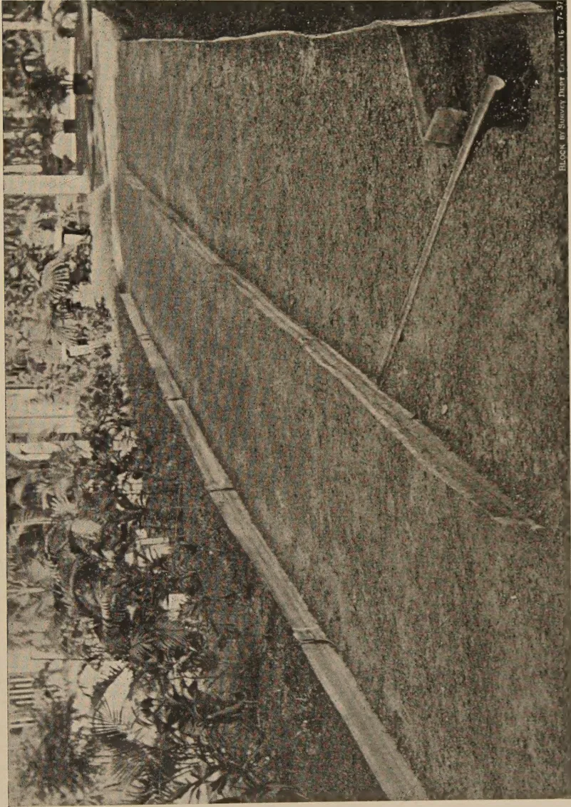
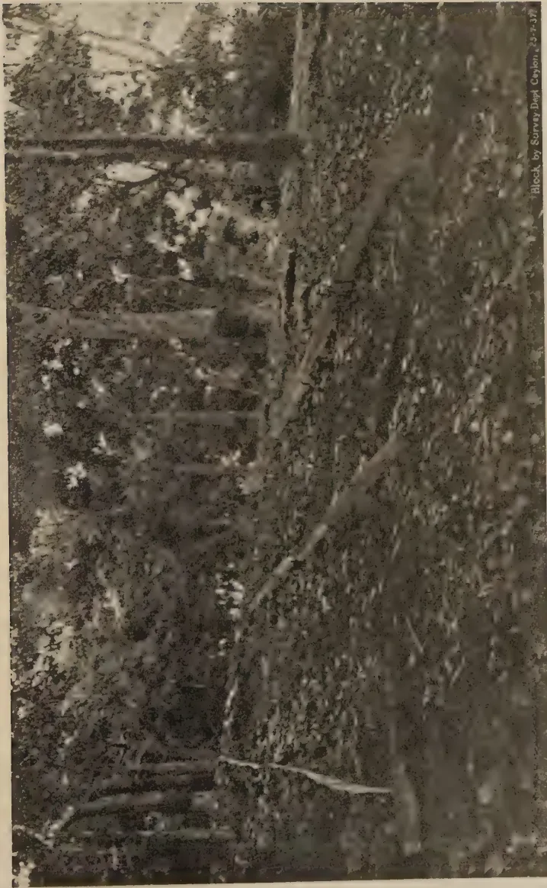
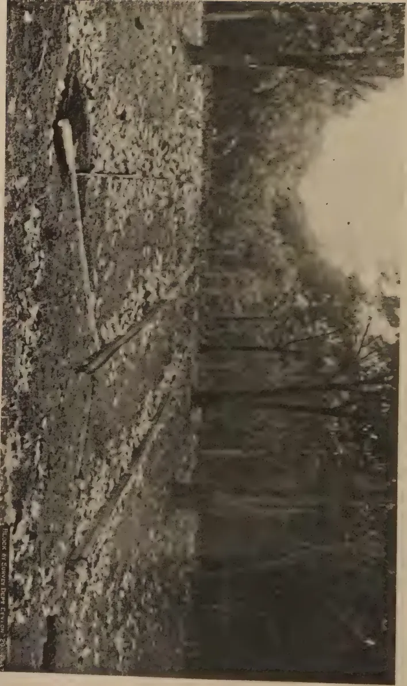
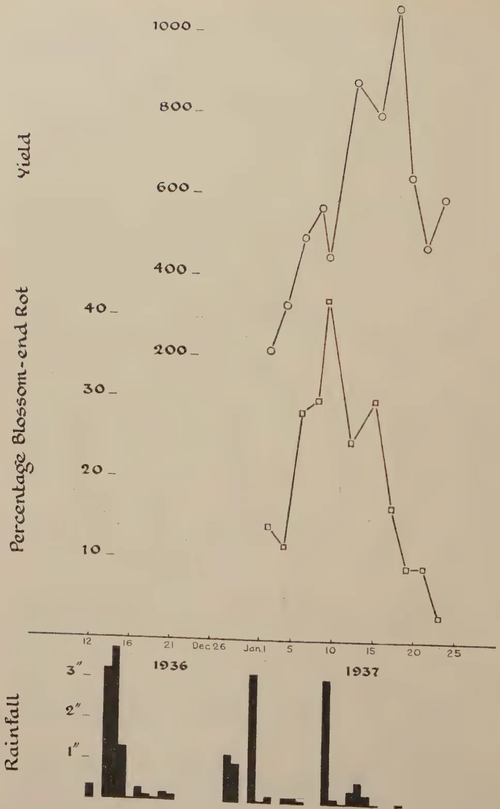
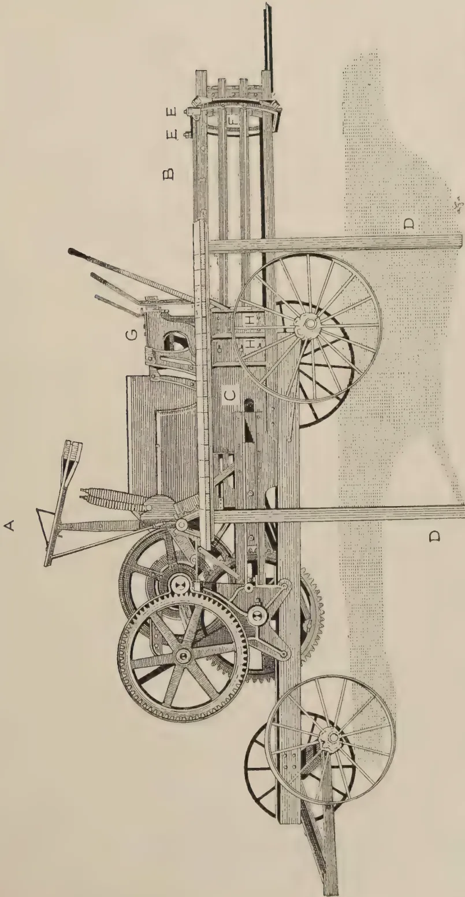

The
Tropical Agriculturist
September, 1937
EDITORIAL
IMPROVEMENT OF LIVE-STOCK
THE Department of Agriculture has submitted to the Central Board of Agriculture the outline of a scheme for the improvement of the live-stock industry. The pivotal proposal in this scheme is the grading up of cattle by crossing local cows with sires imported or bred pure in local state farms from imported stock.
It is notoriously impossible to establish a type with fixed characteristics by crossing; even the preservation over a number of generations of derived qualities in the cross-bred demands skilled attention and the frequent re-infusion of new blood. It is only stating the obvious to say that our present cattle population has been evolved by the elimination, through the ages, of those characteristics that are not naturally suited to the local conditions of soil, climate, and environment. Climate is an unalterable factor; modification of soil and environmental conditions is not impossible, but this involves a strenuous and sustained struggle against adverse circumstances to which neither the energy nor the financial resources of the village cattle owner are equal; and, as Colonel Sir Arthur Olver points out in the most instructive article on animal husbandry in India which we reproduce in this number, "Where control is inadequate or inexpert, the pursuit of such a policy leads to immediate loss of type, rapid degeneration, and high susceptibility to disease." Sir Arthur refers to the Indo-European cross.
126But his statement is no less true of the cross between sire and dam from any two different environments.
For this reason the Departmental memorandum contains a proposal that the Government Central Farm should undertake long-range trials with the selective breeding of local cattle under favourable conditions of improved feeding and care, side by side with the short cut methods of cross breeding. No systematic collection has been made of data regarding the potentialities of local cattle either for the production of milk or the yield of good meat. The Department must undertake this preliminary work before launching a scheme of selective breeding. One often hears of village cows that yield five or six bottles of milk a day and if, on investigation, these high yields are found to be not due to invigoration by the admixture of foreign blood, there should be no difficulty in collecting about fifty cows and their male relatives which will respond readily to proper treatment and improved environment. But it is impossible to expect one isolated experiment, even if it is undertaken by the State, to yield either the best possible results, or results adequate in volume to create an impression on a problem of this magnitude. In all countries progress in cattle breeding has been achieved by the efforts of a large number of independent private workers. Here is a branch of work in which the wealthier land owners can render real service to the country. There are many men in the country who own land suitable for raising cattle, who have the means for investing the moderate capital required for breeding experiments, who have the leisure to devote for this class of work and the education that fits them for the undertaking. The Department can hope to achieve very little within a measurable space of time unless private breeders realize what is undoubtedly their social responsibility. If an adequate number of men come forward to enlist their services in this most important cause, a cause which touches the vital interests of this country, the Agricultural Department will give them all the assistance in its power.
127P. A. KEILLER, F.I.C., F.C.S.,
ANALYST, COLOMBO COMMERCIAL CO., LTD.
AN idea has been prevalent in Ceylon for many years that soluble fertilisers, such as sulphate of ammonia and nitrate of soda, are very liable to loss should rain follow soon after their application, and the increasing use of sulphate of ammonia as a fertiliser for rubber has aroused interest in the question whether it is sound practice to broadcast this without forking it in.
The loss, if there is any, caused by rainfall may be due to the sulphate of ammonia being washed right through the soil until it reaches the underground water level and is carried completely away, or it may be because it is carried off the surface of the soil by the water which runs off and does not penetrate. This article deals only with the second possibility, but as regards the first it may be noted that it does not happen with any rapidity or completeness. The texture of a soil is very far from being that of a sieve through which water can run unchecked, and the downward movement of water through an average soil is very slow. Moreover, although sulphate of ammonia is readily soluble in water it quickly enters into combination with the clay and humus in the soil and becomes fixed in a much less soluble form and is not found in quantity in the underground drainage water.
In considering the second possibility we are only concerned with the mechanical removal of sulphate of ammonia by water running off the surface of the soil, and it is clear that until water begins to run-off there can be none of this loss. However, hard and sun-baked the soil may be, the first of the rain that falls on it does not run-off; it soaks in. This happens whether the rain is heavy or light—whether it develops into a “five-inch
128plump" or ceases as a light shower; the first of it soaks in and an appreciable time elapses before it begins to run-off the surface.
Now suppose sulphate of ammonia had been broadcast immediately before the rain started. It is very soluble in water and the first drops of rain which fall on it dissolve it. If the rain lasted for only ten seconds it would be impossible to find undissolved sulphate of ammonia on the ground on which the rain had fallen. Having dissolved the sulphate of ammonia this first rain soaks into the soil and takes the sulphate of ammonia with it, and once the fertiliser is below the surface it is safe from surface wash.
If we consider the other extreme and suppose that some insoluble fertiliser, say groundnut cake, had been similarly broadcast, let us see what would happen. Being insoluble in water it will not be dissolved and carried into the soil but will remain on the surface during the time when the rain is soaking in. If the rain continues until water begins to run-off the surface, the particles of groundnut cake are liable to be moved down the slope just as small particles of soil are moved down, and eventually the fertiliser may be entirely washed off the surface into the drains, like so much silt.
We are led to the conclusion, therefore, that the fertilisers liable to be washed off the surface and lost are not those which are readily soluble but those which are insoluble, and that the more quickly soluble a fertiliser is the less chance there is of loss during rain.
A practical demonstration of the truth or fallacy of this would be useful, and the following is a description of some experiments designed for this purpose.
A sloping path, cut out of a cabook (lateritic) formation, was divided down the middle by strips of iron sheeting embedded in the ground, similar strips being placed as outside boundaries to confine the water to the path. At the bottom of the slope a channel was cut diagonally across each half of the path, to lead the run-off into a pit at either side where it could be collected in a suitable vessel. The arrangement is shown in Plate I.

Block by Survey Dept. Car. 16-7-37
Plate I. Run-off Experiment No. I—Plots on hard cabook
This image shows a blank, aged page with a light beige or cream color. The surface has a subtle texture and contains several small, dark specks and faint smudges, characteristic of old paper. There is no text or other content on the page. 129On one strip, sulphate of ammonia was broadcast at the rate of 4 cwt. per acre, the other strip being left untreated as a control. The ground was dry and hard, for although there had been a heavy shower four days previously the weather before and since then had been hot, dry and windy. It should be noted that conditions were very severe. The ground was exceedingly hard, the path having been cut to a depth of about 6 inches in hard laterite from which cabook bricks had recently been cut for building purposes, and the exposed surface had not been top-dressed or treated in any way. It was really a very hard cabook sub-soil.
About an hour and a half after the application a light drizzle of rain fell, lasting only a few minutes, and this was repeated once or twice in the course of the next 6 hours. The ground was hardly wetted and there was no run-off. About 6 hours after the application a sharp shower fell, in the course of which run-off began and the first collection (1 litre) was made. It took 5 minutes to collect this litre.
Rain ceased for half an hour, after which a heavy shower fell. A second collection was made, 1 litre taking 5 minutes as in the first case. A third collection was made 5 minutes after the completion of the second, and this time only 2 minutes were required to collect 1 litre.
The various samples were filtered and the ammonia in them determined by distillation and Nesslerising in the usual way. The results are given in table I.
TABLE ILOSSES FROM AN APPLICATION OF 4 CWT. PER ACRE SULPHATE OF AMMONIA
| S/Ammonia found in surface water from control plot |
S/Ammonia found in surface water from manured plot |
S/Ammonia lost from manured plot |
Percen- tage lost |
Total loss from 1 acre |
|---|---|---|---|---|
| 1st Collection—5 minutes | ||||
| 0.00008 oz. | 0.00421 oz. | 0.00413 oz. | 0.020 | 1.4 oz. |
| 2nd Collection—5 minutes | ||||
| 0.00008 oz. | 0.00498 oz. | 0.00490 oz. | 0.023 | 1.6 oz. |
| 3rd Collection—2 minutes | ||||
| 0.00004 oz. | 0.02342 oz. | 0.02338 oz. | 0.111 | 7.9 oz. |
These figures are not altogether in favour of the contention that there is no loss. When the run-off was such that it took 5 minutes to collect 1 litre the loss was very small, and was practically the same after cessation of rain for half an hour, but when the rate of flow increased so that 1 litre was collected in 2 minutes the loss increased five-fold and reached the considerable total of half a pound of sulphate of ammonia per acre.
The explanation appears to be that on such a very hard soil the penetration of rain water has not gone beyond an inch or two when run-off begins and that it proceeds extremely slowly after that. All the sulphate of ammonia is, therefore, concentrated in the first one or two inches of surface soil, and if the run-off is rapid it carries a good deal down the slope before fixation takes place. Under estate conditions, even if the soil were as hard as in this experiment, it is likely that the run-off would have a longer distance to travel before reaching a drain, while at the same time its flow will be checked here and there by stones, leaves, roots, etc., giving time for more soaking in to take place, and the chances are that the loss would not be so great as under the very severe conditions of this experiment.
The experiment was continued as follows: after an interval of 13 days without rain and with a very hot sun and a strong wind, a heavy shower fell lasting half an hour and measuring 0.56 inches. No further application of sulphate of ammonia had been made and the run-off was collected in three lots as before. The first collection started with the beginning of the flow, the second was taken 5 minutes after the finish of the first, and the third 10 minutes after the finish of the second. The flow was rapid, only from 1 to 2 minutes being required for the collection of 1 litre. The results are shown in table II.
TABLE II
FURTHER LOSSES IN THE SAME EXPERIMENT AFTER A DRY SPELL OF 13 DAYS
| S/Ammonia found in surface water from control plot |
S/Ammonia found in surface water from manured plot |
S/Ammonia lost from manured plot |
Percen- tage lost |
Total loss from 1 acre |
|---|---|---|---|---|
| 1st Collection—2 minutes | ||||
| 0.00013 oz. | 0.00424 oz. | 0.00411 oz. | 0.020 | 1.4 oz. |
| 2nd Collection—1 minute | ||||
| 0.00012 oz. | 0.00543 oz. | 0.00531 oz. | 0.025 | 1.8 oz. |
| 3rd Collection—1 minute | ||||
| 0.00011 oz. | 0.00310 oz. | 0.00299 oz. | 0.014 | 1.0 oz. |
These figures make an interesting comparison with table I. Although the rate of flow in the first collection was equal to that which caused a loss of nearly 8 oz. of sulphate of ammonia from an acre at the start of the experiment, it only caused the negligible loss of 1.4 oz. in this case, while though the rate was doubled in the second and third collections the loss per acre reached its maximum at 1.8 oz. and dropped thereafter to just over 1 oz.
This shows how small the loss is, even under these severe conditions, when rain is intermittent.
Another dry spell of 12 days followed, the weather being hot. Rain fell during the night following this interval, measuring 1.39 inches. This was not collected.
Five days later, heavy rain fell in the afternoon and three collections from both plots were made. Run-off started at 4.25 p.m. and 1 litre was collected from the control in 6 minutes and from the treated plot in 2 minutes. The second collection was made 5 minutes after the finish of the first and took 4 minutes on the control and 3 minutes on the treated plot. The third collection was made after a further interval of 5 minutes and both litres took 2 minutes to collect. The rainfall between 4.10 and 4.47 p.m. was 0.95 inches. The results in this series are shown in table III.
TABLE IIIFURTHER LOSSES IN THE SAME EXPERIMENT AFTER AN INTERVAL OF 16 DAYS
| S/Ammonia found in surface water from control plot |
S/Ammonia found in surface water from manured plot |
S/Ammonia lost from manured plot |
Percen- tage lost |
Total loss from 1 acre |
|---|---|---|---|---|
| 1st Collection—2 minutes | ||||
| 0.00019 oz. | 0.00252 oz. | 0.00233 oz. | 0.011 | 0.79 oz. |
| 2nd Collection—3 minutes | ||||
| 0.00013 oz. | 0.00212 oz. | 0.00199 oz. | 0.009 | 0.64 oz. |
| 3rd Collection—2 minutes | ||||
| 0.00004 oz. | 0.00087 oz. | 0.00083 oz. | 0.004 | 0.28 oz. |
The rate of flow during the first collection was the same as that recorded for the first in table II, but the loss was only just over half as much. In the second collection it was even less, and in the third, with a rate of flow again as fast as in the first, the loss dropped to the very low figure of oz. from 1 acre.
132The experiment was concluded with a final series of collections 4 days later. Rain fell after an interval of 3 days, but this occurred at night and no collection was made; the total fall amounted to 0.61 inches. The following evening there was more rain, just before dark, and three collections were made from each plot, as before. The first collection took 3 minutes to produce 1 litre, after which rain ceased for 15 minutes. At the second collection the rain was heavy and 1 litre was obtained in 1 minute. At the third collection, 2 minutes were required to produce 1 litre. The results of these collections are shown in table IV.
TABLE IVFURTHER LOSSES IN THE SAME EXPERIMENT AFTER AN INTERVAL OF 4 DAYS
| S/Ammonia found in surface water from control plot |
S/Ammonia found in surface water from manured plot |
S/Ammonia lost from manured plot |
Percen- tage lost |
Total loss from 1 acre |
|---|---|---|---|---|
| 1st Collection—3 minutes | ||||
| 0.00013 oz. | 0.00233 oz. | 0.00220 oz. | 0.010 | 0.72 oz. |
| 2nd Collection—1 minute | ||||
| 0.00010 oz. | 0.00171 oz. | 0.00161 oz. | 0.008 | 0.56 oz. |
| 3rd Collection—2 minutes | ||||
| 0.00005 oz. | 0.00099 oz. | 0.00094 oz. | 0.004 | 0.28 oz. |
This series shows practically the same losses as in the previous case.
Although tables III and IV do not show complete absence of loss it must be admitted that from one quarter to three quarters of an ounce out of 448 lb. is quite negligible. Even the first two tables, if we accept the rather inexplicably high figure of 7.9 oz. in the third collection of the first series, do not show any loss as great as 2 oz., and this from an acre on which 448 lb. has been applied is very insignificant.
These figures do not enable us to estimate what the total loss has been as a result of all the rain which fell while the experiment was being carried out. This would have involved the collection and analysis of the whole of the run-off, and this was not attempted. They do show, however, that even in heavy rain (in the 3rd series nearly an inch fell in half an hour) lasting for 5 minutes the total loss is usually of the order of from 1 to

A black and white photograph showing a section of a rubber plantation. The foreground and middle ground are filled with dense, low-lying vegetation and fallen leaves. Several tall, slender rubber trees are visible, some with distinct horizontal markings or scars from tapping. The background shows more trees and a hint of a clearing or path. The image has a grainy, historical quality.Block by Survey Dept Ceylon. 25-2-37
Plate II. Run-off Experiment No. 2—Plots on forked rubber land

A black and white photograph showing a field of rubber trees. In the foreground, a wooden pole is driven into the ground, with a horizontal pipe or trough extending from it across the field. The ground is covered with fallen leaves or debris. The background shows a dense grove of rubber trees. The image is oriented horizontally on the page.Plate III. Run-off Experiment No. 3—Plots on forked rubber land
1332 oz. from an acre. Remarks have sometimes been made regarding the supposed losses on an estate to the effect that the manure "has practically all gone" or "at least half of it has been washed away." If even half were washed away that would mean a loss of 224 pounds per acre, whereas the loss of a few ounces is really what happened—and that under conditions which are much more severe than those on the average estate.
The experiment just described was looked upon as a preliminary one, and it was felt that further trials under estate conditions would be of greater practical interest. Two similar lay-outs with the same size of plots were therefore arranged on sloping ground in reasonably well-forked rubber land. They are shown in Plates II & III.
In the second experiment, sulphate of ammonia was broadcast, at the rate of 4 cwt. per acre, about 12 hours before rain fell. This rain only amounted to a slight shower of 0.09 inches and there was no run-off. There was no rain the following day, but on the evening of the second day rain started at about 10 p.m. and collection went on from that time until 2.15 a.m. by which time about 2½ litres had been collected. The total rainfall was 1.34 inches.
Except for one heavy shower and a few light drizzles, no rain had fallen for 14 days before the application, and the ground was dry, though nothing like so hard as in the previous trial. The soil was typical "cabooky" rubber land—a red, gravelly laterite. It had been forked once a year and was last forked six months before the application.
The results from this experiment are shown in table V.
TABLE V
LOSS FROM AN APPLICATION ON RUBBER LAND FORKED ONCE A YEAR
| S/Ammonia found in surface water from control plot |
S/Ammonia found in surface water from manured plot |
S/Ammonia lost from manured plot |
Percen- tage lost |
Total loss from 1 acre |
|---|---|---|---|---|
| 0.00014 oz. | 0.00040 oz. | 0.00026 oz. | 0.0012 | 0.09 oz. |
*This sample was accidentally contaminated and the result from the control in table VI was used.
In this case the conditions as regards the soil and its previous treatment were the same as in the second experiment, the areas
134being only some 15 yards apart. The application was, however, made 10 days before sufficient rain fell to enable collection to be made. The application was made on the 4th of March, and slight showers fell on the 8th, 11th and 12th, but not sufficient to cause run-off. There was no rain on the 13th, but on the 14th evening rain occurred as already noted in the previous experiment. Collection took place between 10.15 p.m. and 2.15 a.m. and about litres were collected. Total rainfall 1.34 inches. The results are shown in table VI.
TABLE VI
LOSS FROM AN APPLICATION MADE ON RUBBER LAND FORKED ONCE A YEAR
| S/Ammonia found in surface water from control plot |
S/Ammonia found in surface water from manured plot |
S/Ammonia lost from manured plot |
Percent- age lost |
Total loss from 1 acre |
|---|---|---|---|---|
| 0.00014 oz. | 0.00023 oz. | 0.00009 oz. | 0.0004 | 0.029 oz. |
In both these experiments the losses are quite negligible. Traces of ammonia are always found in surface water, and the amount found in the run-off from the treated plots in the second and third experiments is not much more than may occur in shallow well waters, being only from 0.2–0.3 parts per 100,000. The figures have been calculated to ounces sulphate of ammonia per litre collected, and the resulting quantities can be disregarded from the practical point of view. Only traces of sulphate of ammonia are washed off the surface by even heavy rain when the soil is in a reasonably well-forked condition.
The conclusion from these three experiments is that little loss of sulphate of ammonia takes place by surface wash even from unforked and very hard soil unless the run-off is very rapid, and quite negligible amounts from land which has been forked 6 months before the application. If rubber land has not been forked for a year or more and is very hard it is probably advisable to fork in a sulphate of ammonia application, but this is unnecessary if the soil is loose from previous forking.
It should be noted that light forking on hard and previously unforked land may do more harm than good, for by loosening only the first inch or so it increases the amount of soil washed away and this may take a large proportion of the sulphate of ammonia with it. Such cases should be considered individually, with due regard to all the circumstances, and it is inadvisable to attempt to lay down a general rule. Possibly the best plan may be to deep-fork the land during the rains and to apply the sulphate of ammonia, without further forking, towards the end of the rainy season and when the weather is showery.
135H. W. R. BERTRAND and E. C. K. MINOR,
GOVINNA ESTATE
THE three dangerous root diseases of rubber in Ceylon are caused by Fomes lignosus, Fomes noxius (brown root disease), and Poria hypobrunnea. Under certain conditions these diseases can remain apparently semi-dormant in old rubber, and under "forestry" methods it has even been shewn that a suitable ground flora can exert a "buffer" action, delaying but not stopping their spread. Sharples (1936) has shewn that a very high percentage of trees in an old stand may be infected without any external signs above ground.
Rubber managers know that, provided reasonable care is taken, the annual deaths from Fomes may be often less than those due to other causes, such as Ustulina. This, unfortunately perhaps, has diverted attention from a matter of supreme importance when replanting is undertaken. After the old stand is removed the environment of these fungi is radically altered, "the balance of nature" is upset. The soil fauna and flora are exposed to different conditions of temperature, moisture and food, and, in many cases known to the writers, severe outbreaks of these root diseases have occurred in replanted clearings or nurseries where previously their presence was unsuspected.
The degree to which these fungi can normally produce and disseminate viable spores is still not well understood, but Sharples has shewn that the majority of outbreaks in replanted rubber are due to the presence of old centres of infection, which he calls "knots." This is amply confirmed in the writers' experience. In a number of clearings and nurseries where there have been well over a hundred separate outbreaks, in every case,
136on digging round and below a diseased plant, an old stump or root with one of the three fungi on it has been found.
The danger of leaving such a disease patch untreated lies in the fact that two of these root diseases produce thick aggregated strands of mycelium, known as rhizomorphs, which can travel along quite small living or dead roots and in many cases have been traced along the underside of boulders where no roots were present. It will be readily understood that these rhizomorphs, which, occasionally, have been observed of a thickness approaching that of a pencil, have a far greater chance of survival under adverse conditions than the ordinary fine mycelium. Moreover, the Fomes group are not obligate parasites. They can not only exist for long periods on a host which they have killed, but can also invade and live on dead wood. The latter point has been disputed but the writers found an upper branch, which could not possibly have been attacked when the tree was standing, partly covered by earth and bearing an ample crop of both rhizomorphs and fructifications of Fomes lignosus.
A further point of importance is that the Fomes group can spread under ground covers such as Pueraria and Centrosema, without killing them. The presence, therefore, of a ground cover is highly dangerous in infected areas. Moreover, under such a cover there may be so much saprophytic mycelium of somewhat similar appearance that even (in the writers' experience) a trained mycologist, let alone estate staff, has been at a loss to determine the extent of the disease.
In a replanted area, therefore, there are two main factors making for the spread of these root diseases—(a) conditions encouraging the spread of the fungus from centres of infection, (b) the invasion of such centres by the roots of the young rubber plants.
Sharples rightly emphasizes the importance of dealing promptly with such "knots" of infection before the roots of the young rubber have begun to interlace. He advises that when a young rubber plant is killed the soil in its immediate neighbourhood be thoroughly forked over, the source of the disease, or "knot," traced, and all plant residues be removed and burnt. He shews that prompt and proper attention to such
137cases will result in a falling percentage of attack, and his work is a significant advance in our knowledge of methods of control.
It should be noticed that in the early stages of a clearing, before interlacing of roots has taken place, he does not consider trenching necessary. This, also, is fully borne out by the writers' experience. Except where treatment has presented special and peculiar difficulties, such as in steep boulder land with big roots which cannot be removed, or in steep platformed clearings where old roots may be buried to great depth, in no single case so far, out of a great number, has the disease spread.
A further point is that in several cases these "knots" of infection have been found, in nurseries or in the field, two to three feet down, and a number had to be dug out to a depth of five feet. It clearly would be economically impossible to dig over a replanted area to such a depth on the off-chance of finding the tap-root of some formerly thinned-out tree.
Consideration of these points led the writers to the following conclusions and practice :—
1. These dangerous root diseases are found to be far more commonly present in replanted areas than was previously suspected. Very serious losses, in the nursery or the field, ensue when these diseases are present, unsuspected, and not immediately controlled.
2. Though it is desirable to remove or burn all reasonably accessible roots and timber, their complete removal would not, on the off-chance of removing some "knot" of infection, especially on steep or boulder land, be economically possible or agriculturally advisable.
3. For many reasons there is an optimum stand of "buds" per acre. The expense of nurseries, budding, holing, subsequent attention to pests and disease, manure, and the difficulty on steep and rocky land of fitting in reasonably well-spaced holes, places an upper limit. Moreover, with too big an original stand, bark diseases are encouraged; the additional expense of thinning out is incurred, with its added danger of tap-roots left in causing further root disease.
4. There are many good reasons for planting a bigger stand than is ultimately desirable, but it occurred to the writers
138that instead of doing this for the purpose of allowing for deaths from root diseases and of finding the sources of infection, less expensive and more effective plants could be used.
After removal of grass and all climbing covers, such as Pueraria, the field is sown with a mixture of Crotalaria anagyroides and Tephrosia Vogelii. If the climbers are not removed they will swamp the bushes.
These bushy covers will in future be referred to as "indicators," because their main purpose is to indicate the presence of centres of root disease. The plants usually die quickly when attacked, and, turning yellow, can easily be seen.
T. Vogelii is a quick grower and excellent "indicator," but, in the Kalutara district, tends to die back after a year or so. It has since been found that a better "mix" would be 1 lb. C. anagyroides, 2 lb. T. Vogelii, 2 lb. Boga medeloa, per acre. This should be repeated if necessary and failure patches re-sown.
It is important to have a mixture of these covers.
Crotalaria anagyroides, though a good "indicator," is very subject to a disease caused by Sclerotium Rolfsii, also to Pink Disease. Tephrosia Vogelii and Boga are seldom attacked by Sclerotium, but may be badly attacked by Irpex subrinosus. If the seed is well mixed there is not so much chance of these fungi, which are killers, destroying a large patch of "indicators."
As it is essential that the staff and pest gangs know these diseases a short description of their common appearance on the the plants mentioned is given.
Sclerotium Rolfsii.—Attacks the collar and a few inches up. There is a close web of white mycelium accompanied by a great number of tiny white balls easily seen with the naked eye. In later stages they turn yellow, orange, and finally dark brown. The disease is favoured by damp and overcrowding. Dense vigna is a common host, but in this case Crotalaria striata (the small quick-growing one) is the worst carrier, also, it is a bad "indicator."
When ordering or picking seed of C. anagyroides it is well to ensure that as little as possible of C. striata be included.
139Pink Disease.—Usually attacks a stem or branch higher up. At first an unmistakable salmon pink patch appears. Closer examination shows a finely reticulated pattern on the smooth almost shiny surface.
Irpex subvinosus.—Fairly common in wet districts on Boga and T. Vogelii, but so far not seen on C. anagyroides. It also attacks the plant on a stem or branch. The name, subvinosus, describes its colour, which may vary from pale mauve to almost purple. The patch is usually about two inches long. Looked at closely, it has a peculiar “prickly” appearance, with the closely placed tiny “prickles” pointing down.
For two reasons it is important that staff and pest coolies be trained to recognise and treat the diseases of “indicators.” (a) Unless these are well understood money will be wasted in treating such areas for root disease which was not the cause of death. (b) A large patch of the bushes may be killed out by these “top” diseases before they have served their purpose.
During the first two years it is well worth while taking a little trouble to control these “top” diseases. The diseased part of bushes so attacked should be burnt and the stems of the neighbouring plants sprayed with Bordeaux or Burgundy Mixture. It should not be forgotten that the loss of such plants also puts up weeding costs.
Prompt spotting of diseased “indicators” is essential. In the early stages, i.e., as soon as a bush begins to turn yellow, the cause is easily diagnosed. Apart from mechanical damage it is certain to be either a “top” disease or one of the three root diseases. It should be carefully noted that, if staff supervision is untrained or inadequate, dead bushes may not be noticed until long after death. In such case the root may be covered or invaded by fungi difficult for the amateur to diagnose.
In this connection two recent cases are worth mention. The Superintendents heavily pruned their bushy covers, many of which, as a result, died. The roots of the majority of these dead bushes developed saprophytic fungi which were mistaken for the root killer diseases.
140The roots of bushy covers must not be allowed to invade the planting holes to the detriment of the "bud." Where this is likely the bush must be pulled out, but reasonable proximity must be allowed to prevent "sun-bake" of the bud.
When an "indicator" is killed by a root disease the site is marked by a small red flag on a tall staff. One or more gangs of three specially selected coolies are kept on the job of dealing with such areas. The most economical unit is one man and two women. The man does the heavy forking, the women mamoty over the forked area, or, in the case of deep diseased tap-roots, remove the earth in baskets, pick over the soil, and place all plant residues in a portable incinerator. In the writers' experience, if this method is thoroughly carried out, it is effective. In no case has there been an extension of the disease, and the method presents no difficulties except where big boulders are undermined by infected roots.
In a number of cases it has been possible to save attacked "buds" by wiping off the mycelium and applying 2 per cent. copper sulphate, but this is successful only if the bark is not already killed. Copper sulphate also may be useful where diseased roots cannot be got out owing to rocks.
The incinerator is made out of an oil drum. Top and bottom are cut out; large square holes are cut near the bottom for ventilation; two pipes are inserted about one-third the way up to serve the dual purpose of supporting the fire grate and as carrying handles. The holes for the pipes should be big so that by shaking the pipes the ash can be cleared.
The writers wish to record their very cordial thanks to Mr. M. Park, Government Mycologist, Peradeniya, for his unfailing patience in identifying a great number of fungi sent to his laboratory, for visiting these estates, and for giving us the benefit of his criticisms and advice on the work being done.
Sharples, A. (1936). Diseases and Pests of the Rubber Tree. Macmillan & Co., Ltd., London,
141MALCOLM PARK, A.R.C.S.,
MYCOLOGIST
BLOSSOM-END rot of tomatoes is common in Ceylon and often causes considerable losses in places where tomatoes are grown extensively. Its appearance is well-known to tomato growers, but, to avoid confusion, a short description of the symptoms of the disease is given below.
As the name of the disease implies, the injury occurs at or very close to the stigma or blossom-end of the fruits. It never originates from any other part of the fruit or plant. The disease first appears as a water-soaked area at or near the blossom-end of the fruit, i.e., the part furthest away from the stalk. This water-soaked area soon darkens and enlarges rapidly in a constant widening circle until the fruits begin to ripen. The result on the ripening fruit is a dark brown or black sunken area which may involve as much as half the fruit. The sunken tissue is usually hard and leathery but secondary organisms may sometimes gain an entrance into the disease tissue and cause a soft rot.
Blossom-end rot of tomatoes was first described by Galloway (1888) but its cause was not discovered for many years. Brooks (1914) carried out extensive trials and experiments and concluded that the disease was not due to the action of bacteria or fungi but that it was a physiological disease associated chiefly with the water-content of the soil, and that manuring with certain types of manures increased the incidence of the disease. He showed that the incidence of the disease was greatest when plants were in a condition of great activity and that continued excessive watering or a sudden check in the water-supply induced the disease.
142Other workers have, since that time, confirmed the observations of Brooks and have amplified them. Chamberlain (1933) stated "In his country (New Zealand) it appears that the disease is usually due to lack of moisture, since the condition generally occurs in the fields where the plants are grown on light sandy soil, being often confined to dry, sandy or gravelly ridges. Crops which have been regularly irrigated and are then left for a period without water suffer the heaviest losses. Vigorously grown sappy plants are the most susceptible." He showed that the removal of plants from shaded to unshaded portions of greenhouses also induced the disease.
There is no record of data concerning the disease in Ceylon and, when it was learned that an elaborate spacing and manurial trial was being carried out at the Experiment Station, Anuradhapura, during the maha season, 1936-37, the co-operation of the field staff was sought and secured in obtaining figures of the incidence of the disease.
The experiment consisted of four randomized blocks of eight acre plots. The whole area received a basal dressing of ten tons of compost. The variety of tomato grown was Marglobe. In the experiment two spacings of the plants, viz.,
(a) 3 feet by 1 ft. 6 in.
(b) 3 feet by 1 ft.
were combined with the following four manurial treatments :—
(c) unmanured control
| (x) sulphate of ammonia | .. | .. | 1 cwt. |
| superphosphate | .. | .. | 3 cwt. |
| muriate of potash | .. | .. | 1 cwt. |
| (y) sulphate of ammonia | .. | .. | 1 cwt. |
| superphosphate | .. | .. | 2 cwt. |
| muriate of potash | .. | .. | 1 cwt. |
| (z) sulphate of ammonia | .. | .. | 1 cwt. |
| superphosphate | .. | .. | 3 cwt. |
| muriate of potash | .. | .. | 0.5 cwt. |
Each of the randomized blocks therefore contained the eight plots ac, ax, ay, az, bc, bx, by and bz.
143The plots with the wide and narrow spacings contained 153 and 225 plants respectively; of these the outside rows were omitted to overcome border effects leaving 105 and 161 observed plants in the two sets of plots respectively.
The tomato plants were staked and pruned down to a single stem. This was found to reduce the intensity of attack by leaf-spot or leaf-blight, caused by Septoria lycopersici, which was severe on the young plants before they were staked and pruned.
Fruits were picked when they were ripe, and during the cropping season, which lasted from 2nd January, 1937 until 23rd January, 1937, pickings were made at intervals of from one to three days, but mainly every two days.
TABLE I
FIELD RECORDS OF YIELDS
| Treatment | Total yield of fruits |
Blossom-end Rot Totals |
Percentages of total yield |
|
|---|---|---|---|---|
| ac .. .. | 612 | 122 | 19.9 | |
| ax .. .. | 732 | 151 | 20.6 | |
| ay .. .. | 598 | 106 | 17.7 | |
| az .. .. | 669 | 149 | 22.3 | |
| bc .. .. | 972 | 189 | 19.4 | |
| bx .. .. | 921 | 186 | 20.2 | |
| by .. .. | 1,055 | 244 | 23.1 | |
| bz .. .. | 869 | 147 | 16.9 | |
| Total .. .. | 6,428 | 1,294 | 20.13 |
In table I are given the total yields and the total numbers of fruits affected with blossom-end rot, in the various treatments, for the whole cropping season. The figures from the various replicates were unfortunately lumped together and the data are in consequence not amenable to statistical analysis. The tomatoes affected with blossom-end rot comprised 20.1 per cent. of the total crop.
The numbers of tomatoes picked and the numbers of fruits attacked by blossom-end rot at successive pickings are given

Figure I consists of three vertically aligned charts sharing a common x-axis representing time from December 1936 to January 1937.
Top Chart: Yield
| Date | Yield |
|---|---|
| Dec 26 | 200 |
| Jan 1 | 350 |
| Jan 5 | 480 |
| Jan 10 | 550 |
| Jan 13 | 430 |
| Jan 15 | 850 |
| Jan 18 | 780 |
| Jan 20 | 1050 |
| Jan 22 | 620 |
| Jan 24 | 450 |
| Jan 26 | 580 |
Middle Chart: Percentage Blossom-end Rot
| Date | Percentage Blossom-end Rot |
|---|---|
| Dec 26 | 13 |
| Jan 1 | 10 |
| Jan 5 | 27 |
| Jan 10 | 28 |
| Jan 13 | 42 |
| Jan 15 | 23 |
| Jan 18 | 28 |
| Jan 20 | 15 |
| Jan 22 | 8 |
| Jan 24 | 8 |
| Jan 26 | 5 |
Bottom Chart: Rainfall
| Date | Rainfall (inches) |
|---|---|
| Dec 26 | 0.2 |
| Dec 28 | 3.2 |
| Dec 30 | 1.2 |
| Jan 1 | 0.2 |
| Jan 2 | 0.2 |
| Jan 3 | 0.2 |
| Jan 4 | 0.2 |
| Jan 5 | 0.2 |
| Jan 6 | 0.2 |
| Jan 7 | 0.2 |
| Jan 8 | 0.2 |
| Jan 9 | 0.2 |
| Jan 10 | 0.2 |
| Jan 11 | 0.2 |
| Jan 12 | 0.2 |
| Jan 13 | 0.2 |
| Jan 14 | 0.2 |
| Jan 15 | 0.2 |
| Jan 16 | 0.2 |
| Jan 17 | 0.2 |
| Jan 18 | 0.2 |
| Jan 19 | 0.2 |
| Jan 20 | 0.2 |
| Jan 21 | 0.2 |
| Jan 22 | 0.2 |
| Jan 23 | 0.2 |
| Jan 24 | 0.2 |
| Jan 25 | 0.2 |
Figure I.—The Relation between Blossom-end Rot of Tomatoes and Rainfall
Block by Survey Dept Clayton & Co
145in table II. These figures are plotted in figure I together with the rainfall data. The relevant rainfall figures are also given in table III.
TABLE II
FIELD RECORDS OF YIELDS AT DIFFERENT PICKINGS
| Dates of picking 1937 |
Total Nos. of fruits picked |
Blossom-end Totals | Rot Percentages of total yield |
|---|---|---|---|
| Jan. 2 | .. 210 | 31 | 14.8 |
| „ 4 | .. 326 | 39 | 12.0 |
| „ 6 | .. 489 | 137 | 28.0 |
| „ 8 | .. 563 | 167 | 29.6 |
| „ 9 | .. 440 | 184 | 41.8 |
| „ 12 | .. 873 | 214 | 24.5 |
| „ 15 | .. 789 | 232 | 29.4 |
| „ 17 | .. 1,052 | 171 | 16.3 |
| „ 19 | .. 637 | 58 | 9.1 |
| „ 21 | .. 465 | 43 | 9.2 |
| „ 23 | .. 584 | 18 | 3.1 |
| Total | .. 6,428 | 1,294 | 20.13 |
TABLE III
DAILY RAINFALL RECORDS FROM 11th DECEMBER, 1936 TO 24th JANUARY, 1937
(Rainfall measured at 9 a.m. each day for the previous 24 hours)
| Date December, 1936 |
Rainfall in. |
Date December, 1936 |
Rainfall in. |
Date January, 1937 |
Rainfall in. |
|---|---|---|---|---|---|
| 11 | 0.44 | 26 | — | 10 | 3.05 |
| 12 | 0.33 | 27 | — | 11 | 0.13 |
| 13 | — | 28 | — | 12 | 0.02 |
| 14 | 3.22 | 29 | 1.17 | 13 | 3.35 |
| 15 | 3.75 | 30 | 0.96 | 14 | 0.58 |
| 16 | 1.30 | 31 | — | 15 | 0.25 |
| 17 | 0.02 | January, 1937 | 16 | 0.04 | |
| 18 | 0.30 | 1 | 3.15 | 17 | — |
| 19 | 0.12 | 2 | 0.05 | 18 | — |
| 20 | 0.05 | 3 | 0.18 | 19 | 0.05 |
| 21 | 0.20 | 4 | — | 20 | — |
| 22 | 0.15 | 5 | 0.16 | 21 | — |
| 23 | — | 6 | 0.15 | 22 | — |
| 24 | — | 7 | 0.08 | 23 | — |
| 25 | — | 8 | — | 24 | — |
| 9 | — | ||||
Although it is not possible to analyse the figures statistically it is obvious from a consideration of the figures in table I that the treatments in this experiment had little, if any, effect on the incidence of blossom-end rot. It is possible that the effect of the heavy basal dressing of compost, which was applied to the whole area, had a uniform effect, that the additional doses of artificial fertilizers had no further effect and that the plots might have exhibited differences had the fertilizers been applied to unmanured plots. Other workers have shown that the use of certain fertilizers does increase the incidence of blossom-end rot and the fact that no marked results were obtained in this experiment does not necessarily imply that a similar effect does not occur under Ceylon conditions.
The soil on which the experiment was carried out consists of a shallow layer of loam overlying a compact gravelly pan. Heavy precipitation of rain leads to temporary water-logging of the surface soil owing to the initial impermeability of the compact gravel. It has been observed, however, that rapid drainage soon succeeds a period of water-logging and it is thought that this is due to the establishment of capillary columns through the gravel layer which, when complete, result in rapid drainage of the surface layer of soil. A sequence of two or three days of soil saturation followed suddenly by relative dryness is accordingly not unusual.
The intense insolation which occurs in Anuradhapura also contributes to the rapid drying up of the soil.
It will be seen from table III and from figure 1 that the rainfall during the maturing of the tomatoes was heavy but irregular. It will be seen that the very wet days, 14th to 16th December, were followed by a period with relatively light rainfall and that six days of dry weather intervened between the 22nd December and the heavy rains of 29th December, 1936, to 1st January, 1937. Irregular precipitation like this would produce marked changes in the water-content of normal soils and the changes produced in the soil of the experimental plots must have been considerable. It has been shown by Brooks and other workers that marked fluctuations in the water content of the soil leads to the incidence of blossom-end rot of
147tomatoes and it is therefore not surprising that the average percentage of diseased to total fruits was about 20 per cent. and that, at one picking, as many as 40 per cent. of the fruits were attacked by blossom-end rot.
No detailed interpretation of the curves in figure 1 is attempted here. From an isolated set of observations as are herein recorded it is not possible to conclude definitely that the maximum occurrence of blossom end rot is correlated with the sudden fluctuation from wet to dry soil conditions which took place about a fortnight previously. It is, however, thought that the relationship is sufficiently significant to be worthy of record. The collection of the data herein presented was suggested primarily to note the effect of artificial fertilizers on the incidence of this and other diseases. As has been pointed out above, negative results were obtained on this point but the relationship between weather and the consequent water-content of the soil and the incidence of blossom-end rot appears to be sufficiently close to warrant the collection of further data for the complete elucidation of the problem. Tomatoes may well become an important rotation crop of villagers in Anuradhapura district and elsewhere and a disease which has been shown in this experiment to render 20 per cent. of the fruits economically valueless may prove to be a limiting factor in the successful cultivation of the crop.
The thanks of the author are due to Mr. W. R. C. Paul, Divisional Agricultural Officer, Northern Division, and to Mr. E. S. de S. Jayasundera, Manager, Experiment Station, Anuradhapura, for their co-operation and for the collection of field data and to Dr. M. Fernando for his assistance in the presentation of those data.
Brooks, C. (1914).—Blossom-end Rot of Tomatoes. Phytopathology, Vol. 4. pp. 345-373.
Chamberlain, E. E. (1913).—Blossom-end Rot of Tomatoes. N. Z. Journ. Agric., Vol. 46, No. 5, pp. 293-296.
Galloway, B. T. (1888).—Notes on the Black-rot of Tomatoes. United States Dept. Agric. Rept. pp. 339-346.
148W. R. C. PAUL, M.A., M.Sc., D.I.C., F.L.S., Dip. Agric. (Cantab.),
DIVISIONAL AGRICULTURAL OFFICER, NORTHERN
AND
S. K. THURAISINGHAM, B.Sc., Dip. Agric. (Wye),
SUB-DIVISIONAL AGRICULTURAL OFFICER, JAFFNA
IN the Jaffna Peninsula, there is a large demand for straw chiefly for feeding the numerous bullocks of the Hillikere or Mysore breed maintained there for the main purpose of transport but also for work on the irrigation devices of the double mhothe and the Persian wheel used on wells. As the supply of straw produced locally from both paddy and millets is quite insufficient to meet this demand an extensive trade in paddy straw has developed from the northern parts of the mainland, chiefly the area under the Karachi Irrigation Scheme. Straw in Jaffna is sold by weight and in view of the fact that the transport of this commodity both by rail and by road is based on a charge per vehicle and not by weight it should be profitable to transport the maximum weight in a vehicle. For this purpose the straw needs compression into bales and in order to demonstrate the advantages of baling to the farmers of the Karachi Scheme a mechanical straw baler was obtained in 1935 for use at the Paranthan Paddy Seed Station, the type being a McCormick-Deering Motor Hay Press imported from the International Harvester Company, Chicago, at a cost of Rs. 2,121.23 delivered in Colombo. It presses the straw into compact bales which are easy to handle and transport.
The machine is primarily used for baling the straw produced at the Paddy Seed Station both for the Jaffna market as well as for supplying the requirements of the cattle at the Jaffna Experiment Station, where no paddy nor millets have been

A detailed technical illustration of a mechanical device, possibly a pump or a specialized agricultural tool. The machine is constructed from wood and metal. It features a large horizontal frame (C) with two large spoked wheels (D) at the ends. A vertical column (B) is mounted on the frame, with a smaller spoked wheel (E) at its base. A complex gear mechanism is located on the left side, consisting of several interlocking gears of different sizes. A lever (A) is attached to this gear assembly. A small cylindrical component (G) is also visible. The drawing is labeled with letters A, B, C, D, E, and G, indicating specific parts of the machine.Fig. 1
Bought by Survey Dept. Coylon 13 8. 18.
150grown. Straw from outside farms is also baled at a charge of 7 cents per bale.
The baler is operated by a 6 H.P. kerosene engine and produces rectangular bales with end dimensions of approximately inches, while the length can be varied as required. With a length of about 22 inches a bale weighs approximately cwt. The engine and baler are fitted on a chassis with four wheels so as to make the machine portable but as its total weight is over 2 tons it cannot be conveyed along paths across paddy fields and on village roads unless they are made suitable for taking this load. The machine is for this reason housed in a shed in the Paddy Station and is worked there.
The process of baling is carried out by pressure exerted in a horizontal direction. As soon as the engine is worked and is connected with the baler by means of the belting placed over the fly wheel, loose straw which has been heaped on to the feed table attached to one side of the baler and supported on two legs (DD in fig. I) is pushed in large quantities at a time by a man standing on the feed table, into the feeding chamber (C). By means of an arm or plunger (A) which works up and down and has a serrated end, the straw is thrust further into the chamber. It is then pushed forwards into the baling chamber (H) by a tucker or piston working horizontally on rollers between the two chambers. From the baling chamber, the completed bale passes out by gradual movements towards the open compartment (B) where it is tied by hand with wire which is threaded through while the bale moves along and drops out at the exit (F). The horizontal movement of the tucker causes compression of the straw within the baling chamber by the resistance offered to the outward passage of the bales within the open compartment. The pressure exerted on the straw can be increased or decreased by moving two nuts EE at the exit, causing a corresponding decrease or increase in the size of the compartment. By decreasing its size towards the end and thus increasing the pressure required to force the bales out, bales of greater weight can be made. The movements of the plunger and tucker alternate, the latter pushing the straw towards the exit each time a quantity is thrust into the feeding chamber by the plunger. The two parts work quite smoothly being fitted with springs and rollers.
151When a bale is being formed in the baling chamber, the one ahead of it in the direction of the exit is already made but is being tied with wire by two men standing on either side of the compartment at this point while in front of this is another already tied and passing on while a third is partly out at the exit. While the baler is working all the bales including the one in the process of formation are being subject to a gradual push towards the exit by the action of the tucker and they fall out in succession at short intervals.
The length of each bale can be adjusted by fixing the position of a bell which is attached to the side of the open compartment. When the bell strikes it gives the signal that a bale has been made according to the desired length. As the bale moves on after it has been tied, the tongue of the bell comes in contact with the wire round this bale and as it approaches the corner of the two sides of the bale, it becomes raised by the stretched wire and in doing so with the onward movement of the bale, it slips over releasing the wire and striking against the face of the bell as it falls back. As soon as the bell strikes, no more straw is fed until the wooden block in front of the bale which has dropped from the exit falls out and is placed in the block setter G which is lifted up to enable the plunger as it moves downwards to release the block and allow it to fall into position in the feeding chamber, the block setter being then placed back as before. When the block is in position in the feeding chamber, straw is again fed into the chamber for making a new bale, while at this stage another bale with its block in front falls out and as soon as the bell rings, the same operation is repeated.
In front of each bale within the compartment is a block and the presence of a block on either side of a bale passing through the compartment facilitates the tying of this bale within the compartment as there are three sets of grooves on either side of each block, an end view of which is shown in fig II. Through the grooves wires are threaded from either side by the two men. A piece of wire called a tie sufficient for binding a
Fig. II
152bale once round is passed through the grooves and loosely knotted. A bale may be tied in three places through the three grooves but usually two places suffice and this effects a saving in the cost of the wire. When the bale drops out at the exit the pressure on it is released and it expands quickly but sufficiently to cause the wire to remain firmly bound.
The bale tie maker is a separate equipment which allows wires of different lengths to be cut. It also takes the kinks out of a wire.
It has been found necessary for the work to be carried out expeditiously to employ five men to operate the baler. Two of them are responsible for heaping the straw continuously on to the feed table, another stands on the feed table and pushes large lots of straw into the feeding chamber, while two are employed—one on either side of the open compartment—to thread the tie wires through the grooves in the blocks and tie the bales as they pass through the compartment. One of these two men periodically attends to the engine while it is running but this does not take much time.
For a full working period of about 8 hours, about 10 tons of straw can be baled producing about 400 bales at an average rate of about 50 bales per hour, the weight of a bale being about cwt. The cost of baling amounts to about 5 cents per bale.
In a railway wagon, about 122 bales weighing about 3 tons can be loaded whereas with unbaled straw, which has to be made into loose bundles called kaththais weighing about 5 lb. each, just over tons can be stacked.
A statement is given in table I of the costs incurred in sending baled and unbaled straw and the return on each when straw is valued at 1 cent per lb. in Jaffna.
153TABLE ISTATEMENT OF COSTS OF BALED AND UNBALED STRAW PER WAGON LOAD
FROM PARANTHAN TO JAFFNA RAILWAY STATIONS AND INCOME
A. Baled Straw.—
Costs.
Rs. cts.
| 1. Baling 122 bales for a wagon load at 5 cents per bale .. .. . | 6 10 |
| 2. Transport of 122 bales from the Paddy Station to the Paranthan Railway Station in 4 carts at Re. 1.00 per cart .. .. | 4 00 |
| 3. Loading and unloading charges at the Paddy Station and Railway Station—2 men at 75 cents each .. .. . | 1 50 |
| 4. Rail freight .. .. . | 10 03 |
| Total .. | 21 63 |
Income.
| Value of 122 bales or about 6,832 lb. at 1 cent per lb. .. .. . | 68 32 |
| Cost of baling and transport .. .. . | 21 63 |
| Profit .. | 46 69 |
B. Unbaled Straw.—
Costs.
| 1. Making 750 kaththais for a wagon load at 75 cents per 100 kaththais .. .. | 5 62 |
| 2. Transport of 750 kaththais from the Paddy Station to the Paranthan Railway Station in 2 carts at Re. 1.00 per cart .. .. | 2 00 |
| 3. Unloading and loading charges at the Railway Station (a fixed charge for the kaththais) .. .. | 2 00 |
| 4. Rail freight .. .. . | 10 03 |
| Total .. | 19 65 |
Income.
| Value of 750 kaththais or about 3,750 lb. at 1 cent per lb. .. .. . | 37 50 |
| Cost of making into kaththais and transport .. .. | 19 65 |
| Profit .. | 17 85 |
W. R. C. PAUL, M.A., M.Sc., D.I.C., F.L.S.
THERE are several varieties of chillies (Capsicum annuum L.) which are cultivated in Ceylon as the most important and widely used of the domestic condiments. Originally from Central and South America, chillies were introduced into Asia by the Portuguese about the middle of the seventeenth century and are now cultivated almost everywhere in the Eastern tropics as a valuable minor crop which is utilized in several ways according to the degree of pungency, flavour, size, shape and colour of the pods. It is reported that the green pods are good sources of vitamins A and B and are particularly rich in vitamin C.
The chief form in which this crop is used in the East is as dry chillies in which the dry, ripe pods of certain varieties (C. annuum var. acuminatum) are utilized, after roasting and grinding to a powder, in the preparation of curries. Large quantities of dry chillies are annually imported into Ceylon chiefly from India, but also from Burma, the Straits Settlements and even Japan. The following figures give the annual imports of dry chillies during the last six years:—
| Quantity Thousand Cwt. |
Value Thousand Rs. |
|||
|---|---|---|---|---|
| 1931 | .. | .. | 146.7 | 2,802 |
| 1932 | .. | .. | 155.1 | 1,990 |
| 1933 | .. | .. | 152.3 | 2,774 |
| 1934 | .. | .. | 161.3 | 3,670 |
| 1935 | .. | .. | 159.3 | 2,311 |
| 1936 | .. | .. | 157.0 | 1,999 |
*Also published as Leaflet No. 112 of the Department of Agriculture, Ceylon
155Quality in a dry chilli is based on the following characters of the pod :— high pungency, a bright red colour, glossiness, medium size, a thin skin, a few seeds and a firm stalk. A good dry chilli has a high percentage weight of dry to fresh pods. There are numerous varieties of this type, both local and imported, but the local varieties are, generally, inferior in quality to those that are imported. The pods of the common Wanni chilli grown in the Wanni districts of the Island are too small and contain too many seeds while lacking colour and lustre. Many of the Jaffna varieties are either too long or too short and also lack colour and lustre. It is sometimes the practice in Jaffna to rub the oil extracted from the seeds of Madhuca longifolia (S. mee, T. illupai) on the pods to impart glossiness. Amongst the imported varieties which are known under the trade names of Patna, Gujarati, Nalchatty, Muladi, Tuticorin, Rangoon, Singapore, etc., the Tuticorin is held to be the best and commands the highest price in the Colombo market. It has a medium-sized pod about 2-2½ inches long and has all the other characteristics of a good dry chilli. It is cultivated in the Tinnevelly district of South India and is only available in Ceylon from about September to December. Seed of this variety has been raised in the dry zone Experiment Stations of the Department and is now available to cultivators.
The dry chilli is best cultivated in the dry zone areas of the Island so that the pods can be cured satisfactorily during the dry season. It is grown both as a rain-fed crop as well as under irrigation in the Jaffna district. In view of the large imports of dry chillies and the fact that the best variety in the trade can now be produced locally every effort should be made to extend the cultivation of dry chillies of the Tuticorin variety in the Island.
The next type is the green chilli (C. annuum var. longum) which has a stout medium-sized fleshy pod, somewhat less pungent than the dry chilli varieties. It also differs from the dry chilli in that it is usually picked immature and is sold in the fresh condition. Varieties of this type are unsuitable for drying owing to their thick skin, and cultivation should, therefore, be carried out in proximity to markets as all stocks have to be sold soon after picking. The pods are used who'e
156or sliced for flavouring curries, sambals and the hot liquid preparations called hodhies or sothies used with rice and curry, as well as in pickles. These varieties are chiefly grown in village gardens in the wet zone but there is a large demand for them in the dry zone areas during the months October to January when the green chilli crop is scarce there. The production of green chillies is, however, somewhat limited owing to the fact that stocks cannot be held over for any length of time and any extension in cultivation which may lead at any time to over-production and a consequent fall in prices to an uneconomic level should be avoided.
The third type is the capsicum or sweet pepper (C. annuum var. grossum) varying from mild to sweet and non-pungent fruits which are generally large and have a thicker and more fleshy skin than even the green chilli. They are used as a vegetable, usually stuffed, as well as a curry and in salads and pickles. There are two main forms—the Bullnose with a short squat pod and the Elephant's Trunk with an elongated pod. These varieties, which are chiefly confined to village gardens in the wet zone, are not cultivated to the same extent as the green chilli varieties.
A fourth type is the bird's-eye chilli, Chile pepper, or Bird pepper (Capsicum frutescens) which is, generally found growing wild and springing up rapidly on newly burnt land owing to the dispersal of its seeds by birds. It is a perennial, almost shrubby plant which has small but very pungent pods, usually thin and pointed, but round and globular pods are also known. This species is not generally cultivated owing to the small size of the pods and the fact that they are too pungent and lacking in flavour for use as a dry green chilli. The pods are, however, used for making hot sauces and pickles as well as in certain parts of the world in the preparation of Paprika or Cayenne pepper.
Soil.—In the cultivation of chillies it is essential that the land should be well-drained, the best soil being a rich limestone loam. It should be heavily manured with compost or well-decayed cattle manure at the rate of about 20 cartloads (10 tons) per acre. If the land can be penned with cattle, sheep or goats this should be done earlier in the season or with the
157previous crop so that the manure has time to decay. Fresh cattle manure should be avoided as the plants tend to run to leaf and become susceptible to wilt and leaf curl diseases. Green manure and especially Keppitiya (Croton lacciferus) is valuable. In Jaffna dried palmyrah leaves taken from the roofs of cottages and fences when in need of renewal are used and have given good results. The land should be worked to a depth of 4-6 inches and brought into a fine condition of tilth before transplanting.
Nursery.—The seed should be sown in a nursery bed which should be well manured and carefully prepared. A dressing of compost at the rate of 2-3 lb. per square foot should be forked in and the beds levelled. It is useful to sprinkle a mixture of powdered cattle manure and ashes over the surface. The beds should be raised to provide good drainage with their edges slightly above the level of the soil within. They should be constructed about 3 feet wide and of any convenient length. The seed should be sown broadcast and evenly at the rate of 1 to lb. per 1,000 square feet of nursery, which should provide sufficient seedlings for planting out one acre. About 2 lb. of well-dried Tuticorin chilli pods will give about 1 lb. of seed, but this figure may vary with other varieties.
After sowing, a thin layer of fine soil should be added and pressed down firmly. The beds should be lightly watered and covered with a layer of straw or plaited coconut leaves, the shade being removed after about 6 or 7 days. Watering is continued until germination is completed. The first pair of seed leaves appears in 7 to 8 days.
In the dry zone areas, excluding the Jaffna Peninsula, the nurseries should be sown about the middle of August or early September and the seedlings planted out early in October with the North-East monsoon rains.
The nurseries should be sprayed weekly with a standard fungicide to prevent such diseases as leaf-spot caused by Cercospora capsici.
When the seedlings are about three weeks old it is advantageous to give them a top dressing by watering the beds with a solution of Nicifos 22/18 at the rate of 1 oz. in 3
158gallons of water per 50 square feet of bed and, thereafter, about once a week in order to develop strong, vigorous growing seedlings. The beds should be weeded and the soil stirred with a wire hoe to prevent crust formation.
Transplanting.—When the seedlings are about 9-12 inches high or about a week before transplanting, they should be topped to about 6-7 inches high so as to encourage the development of a thick stem and side branches.
Transplanting should be done when the seedlings are about 6 weeks old. This operation should be carried out in the evening so that the seedlings may take advantage of the cooler night temperature as soon as they are put out in the open. The distance between the rows should be about 3 feet so as to permit of intercultivation with animal-drawn implements while within the rows the plants may be spaced 2 to 3 feet apart. When planting is done in the wet season the rows should be ridged and trenches constructed around the field to hold up excess water draining from the furrows. In irrigated areas the seedlings may be set on the flat between furrows used for cultivation. About 2-3 seedlings may be planted per hole.
About 3 weeks after transplanting an application of Nicifos 22/18 at the rate of oz. per plant should be made around the base of the plants taking care to avoid sprinkling any of the fertiliser on the leaves. A second application 2 or 3 weeks later is also helpful. If it is not possible to apply a fertiliser a small dressing of cattle manure at intervals of 2 to 3 weeks should be made.
Intercultivation.—About 3 or 4 weedings are necessary, the first soon after planting when weather conditions are favourable the plants being earthed up at each operation, the second about a fortnight later and the third and fourth during the month following.
Picking.—Flowering commences about a month after planting out and picking about to 4 months after sowing the seed in the nursery but there are some varieties which may even be longer. It takes about a month for a fruit to develop and mature. In the first two flowering periods, picking of green chillies should be carried out, wherever possible, even
159though the crop is grown primarily as a dry chilli, in order to encourage fruiting. With a vigorous growing crop picking may be done every 3 or 4 days for green chillies but about once every 7 to 10 days for dry chillies. About 6 to 10 pickings may be taken during the season, but this will depend on the variety. Green chillies are generally picked more often than ripe chillies.
Curing.—It is essential that only pods which are fully ripe or nearly so should be picked in order to avoid the discoloration which often develops after curing on insufficiently ripe pods. In preparing dry chillies, when the matured pods are picked they should, after removing all diseased ones, be heaped indoors for 2 or 3 days so as to allow any pods which are not fully ripe to develop a uniform red colour. The next day the pods should be spread out on a drying floor in the sun for drying. A sandy or concrete floor is suitable provided there is clear sunny weather, otherwise they may be spread over plain zinc sheets which can be removed indoors when the weather becomes cloudy. The pods should be periodically turned over each day in the drying floor.
On the 2nd or 3rd day before the skins of the pods have become too dry and brittle they should be trampled on or rolled over so as to flatten them out as for commercial purposes the pods of dry chillies are flattened when stored pressed in bags. This should be done early in the morning when the skins are flaccid. If the weather be bright and sunny throughout drying should be complete in about 10-12 days, otherwise it may take about a fortnight. Chillies usually dry down to from one-third to one quarter of their fresh weight.
Yield.—The yield of dry chillies varies from 500-1,200 lb. per acre but as much as 2,500 lb. per acre can be obtained with intensive cultivation and high-yielding strains.
160ADLAY (Coix Lachryma -Jobi Linn.)
H. A. PIERIS, B.A. (Cantab.), A.I.C.T.A. (Trinidad),
DIVISIONAL AGRICULTURAL OFFICER, CENTRAL.
OF all the cereals grown in Ceylon, adlay has been found to be the best substitute for the staple grain rice. In view of the fact that rice is insufficiently produced in most villages to meet the demand, the question of growing adlay to supplement it deserves prominent attention. The average tenant farmer does not produce rice to meet his requirements for more than a few months of the year. During the greater period of each year, he is forced by circumstances to supplement the supply of rice with such cereals as kurakkan and maize, or with food crops such as jak and breadfruit. However, none of these can satisfy his real need. It has been found that adlay can be used in the preparation of any article of food that is usually made of rice, and also with the same degree of quality and palatability. Some of the articles of food that can be prepared with adlay are hoppers, milk rice (adlay), roti and oil cakes.
Adlay has been proved to be more wholesome than either wheat or rice, as it contains a greater proportion of fat and protein. Since no other cereal has been found to replace rice in the production of the articles of food commonly used in village homes, and considering also its value as a food, adlay should be given a prominent position in village agriculture.
It is not surprising that cultivators have not yet taken to this cereal since so many are still ignorant of its possibilities. In order to stimulate interest in the cultivation of adlay as a food crop in the villages, it will be necessary to undertake an organised campaign of propaganda. The possibilities of growing adlay in small holdings, colonization and peasant proprietary settlements and chenas are many. The campaign of propaganda should include actual demonstrations in the preparation of
161articles of food, so that the potential cultivators can see for themselves the value of the crop. It is pleasing to note that the Propaganda Officer is undertaking a progressive campaign in this connection.
The average small holder possesses only from to 1 acre of high land. He is generally a tenant paddy cultivator working about a pela or two of paddy field. If a proportion of his high land is brought under adlay, he will be able adequately to supplement his supply of rice and not have to deny himself the food that he is accustomed to take only so long as a supply of rice is available.
Adlay can be grown successfully in abandoned owita land, chenas and high land. Cultivation operations are quite simple. It is best to plough or mammoty fork the land and apply a good dressing of well rotted cattle manure. The planting distance is 2 ft. by 2 ft. or ft. by ft. according to fertility of the soil. Three or four seeds are dibbled into each hole, about one inch deep, and covered with earth. Thinning out of plants should be done later, leaving only two of the healthiest. If only one plant survives in a hole, do not transplant other plants or sow seeds in the holes. It is not usual to fill in vacancies or re-sow vacant holes. The crop may require weeding until the plants begin to tiller and shade the ground. Seed rate is usually 6-10 lb. per acre. The crop is harvested in four to five months. A ratoan crop can be obtained, but it does not pay unless the plants have tillered well. The ratoan crop may be allowed to grow to be cut for fodder or utilised as bedding in the cattle stall for later utilization in the preparation of compost. When the crop has matured, the stalks are cut and threshed. The seed is well sun-dried before milling, which is done in the same manner as paddy. The yield per acre varies according to the fertility of the soil and rate of tillering. It ranges from 40 to 75 bushels per acre. Adlay does admirably in the dry-zone districts, provided it gets sufficient rain in the early stages of growth and a dry period when the grain is setting. Adlay is remarkably free from diseases, but considerable loss is caused by depredations of rats and parrots. Parrots appear in large flocks and devastate the crop wholesale, unless proper safeguards are taken. Rats
162do considerable damage to plants in the seedling stage. These two pests can be extremely harmful at times.
With a view to obtaining the economics of adlay cultivation, the writer laid out a trial plot, one acre in extent, at the Rotation Station, Pelwehera. Owing to the subsequent superimposition of another trial, a quarter of the area had to be abandoned. The land selected was not fertile as it had lost much of its top-soil but the plot was selected for want of a better; and also as it was more or less typical of the land in an average village holding. In spite of the infertility of the land, the crop grew well. The average height of plants was five feet. A number of them produced over 50 tillers each. Considerable damage was caused by parrots. The figures given in table 1 are worked on an acreage basis.
TABLE I
ESTIMATED COST OF PRODUCTION OF AN ACRE OF ADLAY
| Expenditure | |||||
|---|---|---|---|---|---|
| Rs. | cts. | ||||
| Ploughing | .. | .. | .. | 0 | 90 |
| Levelling and ridging | .. | .. | .. | 20 | 70 |
| Manure (cattle) | .. | .. | .. | 4 | 00 |
| Manuring | .. | .. | .. | 2 | 10 |
| Sowing | .. | .. | .. | 3 | 40 |
| Harvesting | .. | .. | .. | 13 | 60 |
| Threshing | .. | .. | .. | 6 | 00 |
| Winnowing | .. | .. | .. | 2 | 00 |
| Seed | .. | .. | .. | 0 | 50 |
| 53 | 20 | ||||
| Income | |||||
| 50 bushels of adlay (unhusked) @ Re. 1.50 per | Rs. | cts. | |||
| bushel | .. | .. | .. | 75 | 00 |
| Expenditure | .. | .. | .. | 53 | 20 |
| Net Income | 21 | 80 | |||
A. B. ATTYGALLE,
MANAGER, EXPERIMENT STATION, WARIYAPOLA
IT is of the utmost importance that proper care should be taken of seed beds, in order to produce a successful crop of tobacco. No detail should be overlooked and no operation imperfectly done in raising the young plants to the planting out stage. For the successful growing of a uniform crop of tobacco, every endeavour should be made to obtain uniformity in size and strength of the seedlings to be transplanted. The site selected should be a well-drained land, close to a permanent supply of water. The same site should not be used continuously as this encourages diseases and pests. The site should be away from big trees which have extensive root systems and too much shade. And eastern or north-eastern exposure is best, as the early morning sunshine is very desirable for the plants.
The seed beds should have an abundance of available plant food at the time the seed germinates and a sufficient supply to maintain steady growth of the seedlings during the period they remain in the beds. First of all the site should be cleared of weeds and rubbish. The area cleared should be in excess of the actual area required for nurseries. Then the land should be ploughed once about a month before the actual nursery operations begin. After the first ploughing a fairly heavy dressing of well-rotted farmyard manure should be broadcasted evenly and the area ploughed again some time before the final operations commence. After this the site should be well levelled and eventually lined off into beds with broad shallow drains between the beds to serve as pathways. Fairly deep open drains should also be cut around the four sides of the site.
164It is found very convenient to carry on operations and handle plants in beds of the following dimensions :— 5 feet wide, 50 feet long with a shallow drain 3 feet wide between the beds.
On opening the pathways between the beds the top-soil should be thrown on the beds. Each bed should then be brought into fine tilth and properly levelled prior to being sterilized. If the soil is too dry it is essential to water the beds and then work the soil into a fine tilth with weeding forks.
The beds should be well sterilized to a depth of 3 inches by the open fire method. This will destroy the seeds of weeds and also kill the destructive organisms inhabiting the soil. The burning should be done when there is no wind blowing, so that full benefit may be derived from the heat generated by the burning material. The beds are well sterilized by burning maize stumps, sunn hemp stumps or brush wood and coconut husks placed in sufficient quantities to sterilize the soil to a depth of about 3 inches. Tobacco stalks should on no account be used for sterilizing beds mainly for two reasons, (1) diseased portions of leaves may be left about on the site and a fresh infection of disease may result. (2) When tobacco stalks are burnt an excess of potash is produced which is detrimental to the germination of seed. When the beds are properly sterilized the soil will be of light brick-red colour and will be very friable and easily pulverized. To clear any doubts as to the depth to which the soil has been sterilized by the fire, a very simple test can be made by burying a potato about 3 inches below the surface of the soil in the seed bed before burning and if the potato has been well cooked and the skin peels easily, then the soil has been sterilized.
After the beds have cooled a fertilizer mixture made up of lb. of nitrate of soda, lb. of sulphate of potash and 1 lb. of superphosphate is spread over each ten square yards of seed bed. This should be lightly dug in taking care not to bring to the surface any unsterilized sub-soil, the fertilizers and residual ash being thoroughly mixed with the surface soil. The seed beds are now reduced to a fine tilth and properly levelled with a hand rake. Now the beds are ready for sowing. Most growers still make the mistake of sowing their beds too
165thickly. Such beds produce delicate and tall plants unsuitable for transplanting. Good and healthy seedlings will be obtained when an ounce of properly cleaned seed is sown in an area of 100 square yards, which should produce enough transplants for 5 acres of field. To secure even distribution of the seed it should be mixed with sand, a teaspoonful of seed being used for every quart of sand. Sow the seed very carefully, gently press the seed into the soil with the open palm, and water the beds lightly with a can fitted with a fine perforated rose. The seed beds should be roofed over with movable cadjans supported on a frame of sticks driven into the ground and tied together. These roofs should be about 5 feet high to allow the watering, weeding and spraying being easily carried out.
To obtain a uniform germination of seed, the beds should be watered regularly during the early mornings and late in the afternoons. The beds should be kept moist but not wet.
According to the area to be transplanted and the size of the flue barn and owing to the uncertainty of weather conditions, sowing of seed should be done in two or three sowings at an interval of ten or fifteen days. The beds should be covered during the night with cheap muslin cloth to keep off insects. The beds should also be kept free from weeds.
In order to guard against pests and diseases the beds should be sprayed weekly when the leaves of seedlings have attained the size of one's finger nail with the following mixtures recommended by the Mycological and the Entomological Divisions of the Department of Agriculture (Ceylon):—
First two sprayings:—
oz. Lead Arsenate
1 oz. Bouisol Colloidal Copper
oz. Agral
in one gallon of water.
When the plants are fairly big the following mixture may be used:—
oz. Lead Arsenate
1 oz. Bouisol Colloidal Copper
oz. Agral
in one gallon of water.
166The spraying should be continued up to the time of transplanting.
During the early stages of growth of the seedlings, the cadjan roof should remain over the beds all day.
The hardening of plants should commence when the plants are about half an inch in height. When the plants come to this height, remove the covers daily during the morning for a few hours, increasing the daily period of exposure until the plants have hardened sufficiently to be left open all day long with no bad effects. Care should be taken not to expose the plants to heavy rains. Plants are ready for transplanting in six to eight weeks. The best way to test if a plant is fit for transplanting is by bending it; if it breaks with a snap then the plant is suitable for transplanting. Before pulling the plants water the beds thoroughly and pull plant by plant taking care to pull only the strongest and the healthiest ones. Pack them carefully in baskets and despatch them to the field for transplanting.
167W. C. LESTER-SMITH, B.A. Dip. Rur. Econ. (Oxon), A.I.C.T.A.
(Trinidad),
CONTROLLER OF PLANT PESTS
I HAVE come here today to say a few words on the subject of soil erosion. That expression, in many ways, is an unfortunate one for, through common usage, it has become general to apply it somewhat loosely and inaccurately to an action we want to prevent, instead of restricting it to its sense of an action which is now taking place or has taken place in the past.
There is only one way of preventing soil erosion and that is by learning to conserve our soil and to preserve it from loss. To cultivate the soil and at the same time to attempt to stop the erosive action of rainwater on that soil once it has started, is often both a futile and an expensive process. It is rather like locking the door of the house while the thief is going out of the garden gate. The most effective action is being taken too late. The control of erosion, to be most efficient and remunerative, must be started when the land is being first cleared and should go hand in hand with its tillage and planting. If the erosion of the soil is allowed to start first, only more expensive measures can stop it and, at such a late stage, control may be either unprofitable or impossible.
The basis of both the prevention and the control of soil erosion is the conservation of the soil, and I have, therefore, adopted this phrase as the title of my present lecture.
With every shower of rain, drops fall on the land surface, and these fall with some force on the surface soil or on any vegetation which covers it. Sooner or later many of these rain drops run together forming little rills or rivulets which run over the surface of the ground and comprise what is termed
*The text of an address given during the Agricultural Week-end held at Matale, July 31, 1937
168surface run-off water. At a still later stage two or more of these little streams of water join up, forming the greater part of the water which finds its way into the rivers, and flows away to the sea. When the rain water falls directly on bare soil or when run-off water flows over its surface, some of the smaller soil particles are moved and knocked about causing them to break up into still smaller particles. The very smallest of these are taken up by the water, being carried with it because it is moving, and if all the water is allowed to flow away they are entirely lost. These smallest soil particles are the most valuable since they are the ones which most readily liberate the food materials which plants require for their growth. They are the main source of plant food in the soil and are therefore of special value, so that every effort should be made to prevent their loss if good crops are desired.
The loss from any soil of the greater proportion of the very smallest soil particles will render that soil infertile and increase the cost of producing crops. The conservation of soil by preventing its erosion is, therefore, one of the most important necessities in the profitable production of crops. A soil which has lost the greater part of its smallest soil particles has lost its fertility. It is harder to cultivate, will not make a good seed bed, does not retain moisture and suffers readily from drought. It is usually lacking in available plant food and this has to be made up for by the more frequent application of costly manures.
To conserve and prevent the loss of the surface soil, which is the best part of all soils, it is necessary to prevent the movement of any surface run-off water. The only effective means of doing this is to ensure that all the rain which falls is absorbed by the soil where it actually falls. In actual practice it is only possible to effect this entirely when the volume and the intensity of the rainfall are comparatively low, its duration is not too long, the slope of the land is not too great, the vegetation covering the soil is sufficiently effective and the soil itself is sufficiently absorptive. Under the existing conditions of rainfall, cultivation and soil types usual in Ceylon, it is rarely possible to prevent entirely the existence during wet weather of some surface run-off water even on almost flat land. It becomes necessary therefore on all cultivated land to take some action to preserve
169the soil from loss by reducing to the greatest possible extent the quantity of run-off water and by controlling it.
The soil conservation measures which are most effective in reducing the amount of run-off water from any normal rain falling on cultivated land are as follows :
(1) Delaying the rate at which this rain reaches the soil surface and, to a limited extent, reducing it in quantity.
(2) Reducing both the rate at which it flows and the distance it travels on the soil surface ; thus giving it more time to sink into the soil.
(3) Making the soil as absorptive as possible so that it will rapidly take up as much water as will benefit both the crop and the soil.
(4) Making provision to collect and to control the removal of all surplus run-off water.
The four measures can be effected in various ways. In the case of the first, the time it takes for the rain to reach the surface soil will depend upon the density of the vegetation which covers it, and, in the case of annual crops, like tobacco, etc., the number of days on which it rains while the soil surface is almost bare while being cultivated and prepared for the crop and during the early stages of its growth. In the case of permanent crops, such as rubber and coconuts, the crop itself will largely break the force of the rain and to some extent delay the rate at which it reaches the soil, though rubber will not be so effective in this during its wintering period. Again, with tea and cacao, high shade trees in the form of albizzia, grevillea and dadap, which are most desirable in the cultivation of these crops, will have a similar action in retarding the rate at which the rain reaches the earth. Low shade and green manure plants, such as gliricidia, crotalarias and tephrosias will most usefully augment and assist both the shade trees and the crop itself, and still further delay the rain in its progress to the soil.
In village gardens a similarly useful action will be performed by the careful cultivation of many plants which have a distinct value in the economy of the home. Of the taller growing types, such plants as arecanut, jak, mango, cashew nut, papaw, clove,
170nutmeg, kapok and plantains may be mentioned, while of the lower growing forms such plants as dhall, Robusta coffee, sugar-cane, Napier grass, yam, betel and pepper vines, brinjals, bandakkas, and even chillies all have a place and a use, not to mention the various kinds of valuable green manure plants that can be grown, such as gliricidia, Leucaena glauca and wild sunflower. A well stocked garden or plantation can be as great a blessing in the conservation of the soil as in the provisioning of the home. A varied and ample diet is of great importance in the health of the nation but no greater than the diverse and numerous plants which produce it in the guarding of the national capital—the soil.
The density of the vegetation which clothes the soil is thus an extremely important factor in its conservation and protection since it not only intercepts the rain drops and reduces the force of their impact on the soil, but also disperses and splits them up into smaller fragments. A further effect of this vegetation is that some of the rain water is directly retained by and evaporated from the foliage of the trees and shrubs on which it falls. The vegetative cover which the growth of plants gives to the land surface also performs other important functions in the conservation of the soil so that the sum total of its beneficial effects, where these can all be employed to the full, in all probability far exceeds those of all the other measures combined.
While the effects of the vegetal cover greatly reduce the amount and rate at which rain reaches the surface of the soil, it is only in areas of primary jungle that any considerable portion of the rain which falls does not eventually reach the ground. Once it does so, unless the soil is extremely absorptive, which is frequently not the case, some movement or flow of this ground surface water must inevitably take place. It is this movement or surface run-off which contributes most to the erosion of soil by water; the greater the volume of this water, the more rapidly and the further the distance it moves over the soil surface, the greater its power of soil transport. For the adequate conservation of the soil and its effective retention, if not actually in situ at least close to its normal resting place, it is essential to reduce to a minimum both the rate of movement of the surface run-off water and the distance
171over which it flows. Only one thing can fully effect this, and that is a perfect ground cover. The very complete clothing of the earth, which is provided by a suitable cover of low-growing plants, is the primary essential in the protection of the surface soil from the direct erosive action of rain. As in the case of tall-growing plants and those of medium height, low-growing ground cover plants intercept the rain and protect the soil from its direct beating action as well as dispersing it and causing some evaporation. They have, however, a more important and valuable function : that of giving the soil a longer time to absorb any surface run-off water. Ground covers reduce both its rate of movement and the distance it flows, since the barrier formed by their roots, their procumbent stems and leaves impede the flow and movement of this water. This is the most effective action which all suitable ground cover plants exert and which make the ideal cover for any particular crop, soil and climatic conditions a so much sought-after ally in the battle between the artificial conditions of crop production and the uncontrollable forces of nature. Low-growing ground cover plants, particularly those which have a close matted growth, such as some of the clover-like types (Desmodium triflorum, S. undupiyali, and Alysicarpus vaginalis, S. aswenna) and certain grasses, also perform a further function in that their root systems have a binding or netting action which protects the surface soil from disturbance and endow it with a sorbent, sponge-like character.
In the cultivation of permanent crops, the nature of the crop and the soil, and the conditions which these impose on the type of plant most desirable to grow as a ground cover, so restrict the choice of plants available for this purpose that sometimes no really suitable one remains. In such cases then the best has to be made of a bad job and, as almost any form of ground cover is preferable to none at all, use has to be made of grass and even certain selected weeds as a last resort. In the cultivation of shorter-aged village and garden crops, considerably greater use than usually is done could be made of various economic crops. Several plants commend themselves as having characters of value in this connection ; among these may be mentioned sweet potato, Coleus parviflorus (S. innala),
172ginger, turmeric, green gram, lemon grass, Amaranthus sp. (S. tampala) and other types of spinach, onions, and even lettuce and mint in certain areas. All these can perform useful functions in the conservation and protection of the soil. Their most effective use lies not so much in the actual growing of the plant as in the method of planting and the rotation and positioning of the various types on the land. On land with even the slightest degree of slope, considerable advantage to the crop and protection to the soil will accrue from the planting of all crops on the contour ; across and not up and down the slope. Where there is a definite slope, more thought should be given to the distance of planting and, where the crop will permit of it, close planting in the row should be adopted. Each plant can be given exactly the same amount of root room as it receives under the customary method of spacing if it be planted close together in the row with the rows spaced wider apart. Consideration should also be given to the type of plant selected for different sections of the land which have a steeper slope, preference being given to the planting on the steeper areas of crops which have a higher vegetational density and which can be closer planted both in the row as well as between rows. Another important factor in connection with the system of strip cropping or planting in contour rows or belts is the careful selection of crops for each of the separate crop strips. Adjoining strips or contour rows should not be either tilled, planted or harvested at the same time, so that on no appreciable length of land up and down the slope is the soil disturbed, bared or otherwise exposed to erosion simultaneously. A long-aged crop should therefore alternate with a short-aged one and a closely-planted crop with a wider-spaced one so as to prevent any excessive soil loss. Where fodder grasses are being grown, a very considerable degree of soil conservation can be effected by growing the grass in double or treble contour rows spaced at intervals up and down the slope and very closely planted in the rows, instead of planting it all together in one compact block. The slight additional labour involved in the planting, harvesting, transporting, etc., of the crop, will invariably be more than compensated for by the valuable soil, the loss of which has been prevented. By the establishment of closely-planted contour rows of either some fodder grass or green manure plant, a
173definite terrace formation naturally occurs in the course of time, without the expenditure on it of any special labour whatsoever. Such a terracing effect can be extremely valuable in the conservation of the soil in reducing the rate of movement of surface run-off water. The longer the time this water can be persuaded to take in flowing over the soil, or, in other words, the slower the rate at which it can be induced to move, the greater the time available for its absorption by the soil and, usually, the greater the quantity which will be absorbed.
The greater the quantity of rainwater the soil will absorb where it actually falls, the less surface run-off water will there be to flow over the soil and the less the degree of erosion which can take place. The rate at which soil can be removed by surface run-off water depends not only on the intensity of the rainfall and slope of the land, but also on the texture of the soil and the rate at which the water flows. The greater the slope of the land the greater its need of measures to conserve the soil. The most effective way of conserving it is to prevent all run-off and this can only be done if the soil is brought into and maintained in such a condition that its absorptive capacity is at its maximum. The maximum is only attained when the soil is porous, well-drained, contains plenty of humus and is moist. A soil which is moist absorbs water much more readily than one which is very dry, and a soil which has plenty of humus in it not only absorbs more water but tends to remain moist. The porosity of a soil depends largely on its texture and the size and arrangement of the individual soil particles. The penetration into the soil of plant roots, which decay and leave passages in the soil, so facilitating the movement of air and water, improve its porosity and its absorptive capacity. Shade trees, green manure plants and ground cover crops thus play a further important part in improving the absorptive capacity of the soil since they increase its porosity and by reason of their shade keep it moist. In addition, the humus they provide as a result of natural leaf-fall and through their use as green manure, improve the organic matter content of the soil, rendering it more absorptive and more productive. It facilitates the entry of air into the soil and creates a more favourable environment for the growth and activity of the beneficial soil
174organisms. Within reason, and with due regard to the crops being cultivated, it is desirable to retain on the land as much as possible of the surface run-off water; the surplus can be either stored on the land or collected and conducted off it under proper control. The too frequent tillage of the soil and the rapid percolation of run-off water through it tend to carry the smaller soil particles into the lower layers of the soil where they block up the available pore space and so reduce its porosity. In this respect the dead and decayed leaves of the crop, and of shade trees, green manures and ground cover plants, perform a further function since they protect the surface of the soil with a layer of organic debris which filters the water and prevents the downward movement of the finer soil particles. The maintenance of a high organic matter content in the soil, perhaps more than any other factor, aids in conserving it, for not only does it markedly increase its absorptive capacity but it also tends to bind the soil particles together without decreasing its porosity; it thus serves to maintain at a high level the plant food supply of the soil and so enables it to support a better and more vigorous protective vegetative growth.
Under conditions of high or intensive rainfall, even in the case of soils with a high absorptive capacity, a certain amount of surplus surface run-off water may be unavoidable. In all such cases provision must be made for the collection and control of this water as near as possible to where it actually falls. The various ways in which this surplus water may be collected, and either stored or removed under control, open another chapter in the conservation of the soil, consideration of which must be postponed till another time.
175SINCE His Excellency the Marquis of Linlithgow became Viceroy of India, there has been a great awakening of interest in the improvement of live-stock and cattle in particular. The matter has been repeatedly discussed with provincial representatives, and this note is intended to put together in comprehensive form recommendations and conclusions as to the lines along which it seems that the development of live-stock and live-stock industry should proceed in India.
From the discussions which have taken place it is evidently agreed that as far as cattle are concerned, the only sound policy for the plains of India is to improve the best indigenous breeds, by systematic selection and proper feeding and management, since European breeds have proved generally unable, even under the best conditions, to maintain themselves satisfactorily within the tropics. This general principle has been found to apply in the case of milch goats also, but in the case of poultry imported, European breeds thrive well and seem on the whole to be less susceptible to disease than the ordinary village fowl. In the case of sheep, it has generally been found difficult to maintain European breeds in the plains, though some success has been obtained in establishing cross-bred merino sheep for the production of better wool. In horses, the improvement effected by imported stock has been very great, though the expense of rearing high-grade stock is generally beyond the means of the ordinary breeder. In the case of donkeys, the imported jack has done much to improve village stock.
It is now abundantly clear that the efforts which were made in the past to improve cattle by breeding limited numbers on provincial farms has, in most provinces, had little lasting effect on the bulk of the relatively enormous numbers to be dealt with. The reasons for this are not difficult to understand for it is obvious that the numbers of suitable sires which could be produced, on ordinary Government farms of limited extent, could never be sufficient directly to affect more than an almost infinitesimal proportion of the huge numbers which exist. Moreover, fatal changes of policy, or change of control for financial or other reasons have intervened to dash any hope of
*By Colonel Sir Arthur Olver, Kt., C.B., C.M.G., F.R.C.V.S., Animal Husbandry Expert, Imperial Council of Agricultural Research in Agriculture and Live-Stock in India, Vol. VII., Part IV, July, 1937
176achieving the extensive results which might have been obtained by skilful handling, on a definite programme, of such limited numbers of sires as were generally available.
On the other hand, in provinces where systematic measures for the improvement of live-stock have been carried on generation after generation by animal husbandry organisations, such as the Veterinary Department of the Punjab, and to a limited extent the live-stock sections of certain Provinces and States, steady improvement has been effected corresponding with the extent to which the Department concerned has been expert in animal husbandry work and devoted to the care and development of live-stock.
Furthermore, where due attention has been paid to purity of blood the improvement has been maintained and an interest in pedigree stock aroused, which augurs well for the future; provided that adequate measures are taken to maintain proper pedigree registration.
In view, however, of the steady reduction which is taking place in grazing areas, and the circumstances in which breeding is generally carried on in India, it seems clear that degeneration of stock is likely to continue unless more adequate steps are taken and a larger proportion of funds are allotted for their better care and development. At present, for the whole of India, including the Punjab, the total allotment for animal husbandry, including veterinary work of all kinds, is only about half of the total allotted for plant husbandry, and it seems clear that the first essential for the systematic improvement of live-stock in India is an adequate animal husbandry organisation, in each Province or State, with no other interests to consider than the welfare and economic exploitation of stock, and with a more adequate share of the total amount of money allocated for the development of agriculture as a whole. Indeed it does not seem reasonable to expect adequate or lasting results in the improvement of live-stock or in the profitable development of animal industry unless and until such organisations are everywhere available.
The constitution and control of such organisations, and the powers and funds to be placed at their disposal, are thus matters of vital importance, which need to be very carefully considered by Provinces and States. It is not merely a question of veterinary or agricultural control, but it seems obvious that to develop live-stock properly such departments should be under the control of suitably trained specialists in such work, devoted solely to the interest of live-stock.
Given a suitable animal husbandry department, the first thing to be done is to consider what kind of stock is to be raised, and it is essential at the outset to arrive at sound decisions as to the particular breeds and types which are likely to suit the circumstances and localities in which breeding is to be carried on. At the risk of stating the obvious, it must be pointed out that
177nowhere in the world is it sound policy to attempt to produce a type of stock which is not naturally suited to the local conditions of soil, climate and environment. The high-class stock can be produced in areas which are not naturally suitable for them, there is no question, but the cost of doing so is prohibitive for the ordinary breeder and, apart from the constant struggle against adverse circumstances which would be entailed, there is the difficulty that—if of a breed or type different from the local stock—the male progeny, when used as sires, would be likely to do more harm than good. Moreover, to obtain fresh blood and to maintain type in the parent herd, it would be necessary constantly to import sires from elsewhere.
The decision as to the particular type to be bred, e.g., working type or milch type, is another matter which requires very careful consideration since, in all breeding work, strict breeding to a type and unbroken continuity of policy are all-important. In this connection, the question whether it is feasible to produce cattle which will breed true for a combination—in high degree—of working capacity with a capacity for milk production, is one of the matters which have to be considered. This question has already been discussed at length in my note “The Inadequacy of Dual-Purpose Cattle as the Goal in Cattle Breeding in India,” the point of which appears to have been missed by many. In that note it was not intended to deny that it was possible for an expert breeder to achieve duality of purpose—up to a certain point—provided that he is at liberty to select freely and to discard animals which do not show the desired combination of factors. But it seems obvious that the Indian peasant, who is not in any way an expert breeder of pedigree stock and who maintains usually not more than one or two cows in a village herd, to meet his own requirements, cannot hope to be in this position. He is not permitted by his religion to slaughter cattle and can only hope at best to be able to mate his cow with a sire of the type he wishes to emphasize in the progeny. If he wants more milk, he would like to be able to mate his cow to a milking-type bull, and would have a much better chance of getting a high yielding heifer than if only dual-purpose sires were available. If he requires more powerful work cattle, he would naturally prefer a sire of pure working type. Ordinary commercial stock are commonly bred on these lines even in advanced countries, but it is a truism that to make and maintain progress, the breeder of the pedigree stock must specialise all the time on one particular type.
For dairying in particular it is necessary to specialise, since if the milk producer is to have a fair chance of making a financial success of his business, he must have high-grade milch-cattle, and for that reason, in areas where dairy stock are largely bred, it is essential to develop high-milking strains. Where the sale of bullocks is the traditional policy, breeding specially for work is likely still to be carried on by semi-nomadic professional breeders so long as suitable grazing remains available at low cost.
178Between these extremes lie the great majority of cultivators who keep one or two cows and produce less specialised 'general utility' stock which, though useful for their requirements, cannot in view of their heterogeneous origin, be relied upon to breed true and therefore cannot be described as 'dual-purpose' stock in its strict sense. To develop and maintain Indian village cattle as true breeding dual-purpose stock would moreover be a colossal undertaking.
Furthermore, though much is said of the breeding of dual-purpose cattle in this country, the method usually adopted appears to be to pay strict attention to milk recording and to retain the best-milking strains until such time as definite signs of unsuitability for draught purposes appear in the progeny. When that time comes the breeder will be faced with a decision whether to retain any high-yielding milk-strains thus evolved, or to destroy the advance thus achieved by crossing back to a working-type bull. What the answer must be in the interest of progress is not difficult to foresee and in the meantime more milk is being bred into the stock. Along this line so long as promising dairy strains are not crossed back to a work-type bull there need be no objection to so-called dual-purpose breeding but high capacity for work and for milk production is physiologically incompatible, and instances are not wanting in India where attempts to retain these factors, in equal degree, in one and same strain, have led to marked deterioration of previously valuable stock. For, beyond a certain point any marked advance in either direction must be cancelled out and the work must to that extent become Sisyphean while any progress towards fixation of a type which should breed true for either factor in high degree must constantly be vitiated.
Even the combination of milking capacity with meat production, qualities which are not incompatible as are capacity for work and milk production, has been given up in other countries, and it seems certain that a similar policy must eventually fail in India since it will not produce that definite segregation of types which has been found essential in every progressive country in the world.
The choice as to which type of bull to use must however largely be influenced by local consideration and the aim of governments should be to provide the type most needed in the locality or, where possible and advisable, to make milking-type as well as working-type bulls available. Where the supply of liquid milk is a profitable undertaking and there are good facilities for the production of fodder crops, the choice would obviously fall on the dairy type, but the ordinary cultivator should as far as possible be in a position to choose the type of sire he considers the most suitable for his particular cows and for his requirements.
Similarly, a choice has to be made as to whether cows or she-buffaloes are to be maintained. Here again there is some diversity of opinion and the
179choice is likely ultimately to be governed by financial considerations ; though there is another aspect to be considered. Where abundance of coarse fodder is available, and where the production of ghee is a major consideration, or where liquid milk is produced for sale—usually by unscrupulous and uncontrolled hawkers—the she-buffalo is at present commonly preferred. But investigation has shown that pure-bred cows of certain Indian breeds of cattle can, in a comparatively few years, be improved by proper feeding and management to a point where they can compete successfully with the buffalo in economy of milk or butter-fat production. In view, therefore, of the greater general utility of cows, as compared with buffaloes, in that they produce better working animals as well as milk, and of the important fact that cows' milk is a much better food, particularly for children, than buffaloes' milk watered down to the same level of butter-fat, the question whether cows should not be bred and as well fed and maintained as are she-buffaloes is one which merits careful study.
In areas where the demand for milk and dairy products is limited and where facilities exist for raising cattle on extensive grazing, the breeding of working-type animals is the traditional policy and seems likely to continue because it is difficult to carry on dairying under the semi-nomadic conditions of life of such breeders. But it is perhaps not sufficiently known that even among breeders of working bullocks a great deal of their total income is derived from the sale of ghee, e.g., we have recently shown, by representatives of large numbers of professional cattle dealers and breeders in western India, some of whom themselves breed and rear large numbers of working bullocks, that the income derived from their sale is not much more than one-fourth of that derived from the sale of ghee and other dairy products. The position is somewhat similar in other parts of India and owing to the growing realisation of the essential importance of milk in human diet, it seems likely that market for liquid milk will improve, while already in certain large areas, milk collection for ghee or cream production is being organised on a big scale through the use of small cream separators. Thus, milk seems likely to become more and more an important consideration for the breeder of work cattle.
A careful analysis of available records has shown that in different parts of India there are breeds, of pure Indian cattle which respond readily to proper treatment and which possess considerable potentialities for milk production. But to ensure rapid progress it is obvious that milking strains must systematically be segregated out from the ordinary cattle of the country and mated with bulls, of known pedigree, from cows of high-milk-yields. In this way, in course of time, definite milking-type Indian cattle should become available which could be relied upon to breed true for milk and in view of the great
180need for such cattle, the Imperial Council of Agricultural Research is now engaged in instituting official herd books for seven of the best known milch breeds of India.
For years past it has been demonstrated by organisations such as the Military Dairy Farms that cross-bred cattle from Indian cows by sires of European blood, in spite of the heavy capital and recurring expenditure involved, are generally, under their special conditions of management, more profitable dairy animals than ordinary Indian cows. On the other hand, there is ample evidence to show that where control is inadequate or inexpert the pursuit of such a policy leads to immediate loss of type, rapid degeneration and high susceptibility to disease.
But a policy of cross-breeding with European cattle is not in any case within the reach of the ordinary Indian milk producer, who is not at liberty to discard freely animals which do not reach the required standard. Moreover, since a long time is required to see the results of such a policy and there is a natural tendency of individual breeders to repeat breeding experiments—in spite of previous failures of which they may not be aware—it is necessary to emphasize as strongly as possible that systematic improvement of the best indigenous breeds of Indian cattle is the only practicable policy for the generality of the people.
It seems generally agreed also that in India it is essential to make provision for organised breeding control in the villages, and that in all breeding under Government control a definite long range policy for improving local breeds should be laid down and suitable provision made to ensure that it shall not be changed, except after full consideration of the issues involved.
Such a matter, in which irreparable harm may easily be done, should not in short be left to the personal predilection of a director who, in present circumstances, may not be a specialist in any branch of animal husbandry or devoted solely to the interest of live-stock. Moreover, seeing that it is an impossibility to produce on Government farms the very large numbers of pedigree bulls which are required for mass improvement of cattle, it seems that the ordinary provincial cattle farm of limited extent should as a rule be utilised primarily for preserving outstanding strains of the best indigenous breeds and for the systematic development and recording of pedigree milch animals rather than in attempting to produce dual-purpose stock.
It is agreed that for the improvement of the generality of stock of a Province or State reliance must be placed upon systematic breeding control in the villages, at first concentrated in areas where the best cattle exist, and later extended, as circumstances permit, into less forward areas. As time goes on and a type becomes established, good animals from selected stock should be
181registered as pure-bred, while all inferior males should be castrated and the services of approved bulls recorded. In the case of dairy cattle, strict recording of milk yields is necessary wherever possible in order that, in course of time, breeders wishing to purchase high-grade dairy stock may be able to obtain reasonably accurate data as to the performance of their ancestors. Indeed, the lack of bulls of known pedigree has been one of the greatest difficulties encountered in carrying out the campaign of live-stock improvement instituted by the present Viceroy.
Simultaneously with and complementary to selected breeding along the above lines it is essential to make arrangements for protective inoculation against contagious disease; while the systematic castration of inferior males, before they can perpetuate the species, is obviously one of the most potent factors in any programme of live-stock improvement. It is in fact now generally recommended that Provincial or State legislation should be undertaken for compulsory castration in selected areas.
At the second meeting of the Animal Husbandry Wing of the Board of Agriculture, held in December, 1936, this matter was discussed and it was decided to recommend that such legislation should be of a permissive nature and confined at first to small selective areas which could gradually be extended. But it was felt that the greatest tact would in any case be needed in the administration of such an act.
In present circumstances the main factor in the production of moderate-priced work cattle is the availability of suitable grazing, since fodder crops are seldom specially grown for such stock. Experience has, however, shown that to rear and maintain the more valuable grades of stock, whether for work or for milk production, it is necessary to make provision for an adequate supply of fodder crops or other highly-nutritious cattle food; depending on whether the young stock are sold at an early age, to be reared by cultivators under semi-stall-fed conditions, or are reared by the dealer with his nomadic herd. In either case it is necessary that some succulent food of suitable composition shall be available throughout the year, particularly for young stock, but also for breeding females.
The best means of providing such a diet is a matter for local study, but when the revenue obtainable from forests is compared with that from high-grade stock, reared at least partly on cultivated fodder or semi-fodder crops, specially grown to supplement or replace the available grazing, it seems clear that it will pay Provincial and State Governments to give every facility for the production of such crops in areas which are at present under forest of low value.
182To deal with this question adequately it seems essential that special committees should be formed as soon as possible on the lines which were recommended by the Animal Husbandry Wing of the Board of Agriculture at its second meeting, held in Madras in December, 1936, after discussing the Report of the Special Forest Grazing Committee, which met during the previous week.
Such committees should obviously be thoroughly representative of all live-stock interests as well as the interests of forestry and crop production, and if on a permanent basis should be able to develop a co-ordinated long-range policy in such matters as the control of forest and other grazing, the devotion of more land to fodder and semi-crop production, the conservation of grass and other fodder as hay or silage, and to advise as to possible measures to restrict the numbers on uneconomic cattle which at present overcrowd the available grazing, and are an ever-present source of infection.
It must never be overlooked that correct feeding and proper management are most important in securing lasting improvement of stock. But it is now very clear from the work of veterinary investigation officers that expert investigation will constantly be needed of the myriad problems of disease, ill-health and unsatisfactory development due to faulty nutrition, the proper study of which entails continual veterinary and animal nutrition investigation and research carried out in collaboration.
At present breeders suffer even more from insidious loss due to parasites or nutritional deficiencies than from the outbreaks of the major plagues of stock, for some of the most important of which improved and cheap methods of control have recently become available. It seems clear, therefore, that in a country like India where a stamping out policy is impracticable and there is constant danger of infection, adequate staff should be provided for the continuous field investigation of such problems all over the country, in collaboration with veterinary and animal nutrition research workers. This would be in addition to the ordinary provincial veterinary staff which is required for the prompt control of epizootics and the treatment of sick animals, as well as for routine work such as systematic preventive inoculation and castration and the inspection of markets, fairs, abattoirs and dairies.
Marketing is another general factor which has immense potentialities in the improvement of live-stock.
Indeed, it is obvious that unless and until satisfactory markets are provided, for improved live-stock and live-stock products, few stock-owners can afford to spend money on the improvement of stock. On the other hand, there is ample evidence that the establishment of a satisfactory market, e.g., for milk or eggs, in any locality, immediately gives a great impetus to the better care and development of the class or stock concerned.
183More detailed conclusions of certain live-stock committees which have been formed from time to time to consider measures for the improvement of live-stock are given in the appendix.
Thus it seems clear that more adequate provision is necessary, in most Provinces and States, for the systematic development of live-stock and animal industry.
Moreover, it is generally agreed by all authorities on human diet that a more adequate and better supply of milk is an outstanding need of India today—better not only as regards cleanliness, but also in its content of protein and mineral salts which are now recognised to be of first rate dietetic importance; particularly for growing children and in a diet which is otherwise mainly vegetarian.
It has in fact recently been shown, by practical feeding tests in India and in all progressive countries, that nothing can replace the protein of high biological value, and mineral salts which are contained in undiluted milk.
To ensure a better supply of milk it is necessary however (1) to provide for proper control of marketing of this vital commodity—which at present is usually sold by insanitary, unscrupulous and inadequately controlled hawkers, (2) to produce better milch animals, (3) to furnish better facilities to enable the milk required for cities to be produced in suitable areas outside city limits, and brought in for sale under satisfactory sanitary conditions, (4) to make better provision for milk produced in the villages throughout the country, to be collected at suitable centres, and after suitable processing, to be marketed as such or in the form of ghee, cream, etc. and (5) to make use of skimmed milk to the fullest possible extent, in human diet and particularly in the feeding of growing children, since in it is contained the whole of the most valuable dietetic constituents of milk, viz., the body-building proteins and mineral salts.
At present, in many parts of India, the she-buffalo is for a variety of reasons preferred to the cow as a milch animal, but it would not be practicable in any event to provide from buffaloes alone, the greatly increased supply of milk which is needed. Moreover, there are points of considerable dietetic importance in this connection which should not be overlooked, viz., owing to its very high though variable butter-fat content, undiluted buffalo's milk is not usually suitable for human consumption. To make it suitable it needs to have fifty per cent. or more of the cream removed and, since undiluted cow's and buffalo's milk have about the same percentage of protein and mineral salts, if both are watered down to a suitable level of butter-fat (say 3.5 per cent.), buffalo's milk becomes of much less feeding value, particularly for growing children, because the protein and salts thereby become much more heavily diluted.
184Thus, while nothing must be done to interfere with the production of useful work-cattle, it appears that the production of more and better milch cattle is a matter of great importance and urgency for the welfare of the people of India.
But to make satisfactory progress and to provide really efficient milkers, it will be necessary to concentrate on high milk production in particular strains regardless of what the effect may eventually be on the capacity for work of the bullocks bred from these particular strains.
The existing supply of working type cattle should in fact be more than ample if young stock and breeding females were better fed. but there is a great shortage of efficient milch cows all over India. On the other hand, it is now well known that there are pure Indian breeds of cattle which have good latent capacity for milk production and which respond readily and markedly to better feeding and management—much more so than buffaloes.
It seems clear, therefore, that the systematic development of high-yielding milch strains of suitable Indian breeds of cattle, as well as of buffaloes for ghee production, is a matter of great urgency and importance to India.
Owing to the high biological value of eggs in human diet. the development of poultry by systematic encouragement of pedigree breeding of selected European breeds, is another matter of great dietetic and economic importance to which far more attention needs to be given as a cottage industry.
The question of live-stock improvement, with special reference to the pedigree bull scheme initiated by H.E. the Viceroy, was discussed in detail first by the Standing Cattle Breeding Committee of the Advisory Board of the Imperial Council of Agricultural Research held at Simla in July, 1936, and then by the Live-stock Improvement Committee of the Second Animal Husbandry Wing meeting of the Board of Agriculture and Animal Husbandry in India held at Madras in December, 1936. The following are the conclusions and recommendations arrived at by these Committees:—
4. In order to carry on continuous improvement it is necessary to record accurately the services of all approved bulls and to register their accredited progeny. For this purpose it is necessary to employ extra staff at the rate of one suitably qualified inspector and subordinate staff per fifty bulls.
5. It is not possible at present to carry out strict registration of pedigree stock under village conditions of breeding, nor to undertake milk recording in villages without special staff.
6. It is felt that a great deal of good could be done if the herds maintained in jails, mental hospitals, etc., at Government expense, and at Pinjrapoles were more extensively utilised for the breeding of pedigree stock, and at such institutions strict milk recording should be feasible. It was also suggested that inducement might be given to the Military Dairy Farms to rear the best of their young male stock of indigenous breeds and to suit their breeding policy as far as practicable to the accepted policy of the country, i.e., the improvement of indigenous breeds. It was also suggested that small herds of pure-bred indigenous dairy cattle should be maintained at Government Seed and Demonstration Farms.
7. For the maintenance of bulls it is necessary to establish funds, the proceeds of which should be spent partly for the purpose of bulls and partly for their maintenance.
8. Wherever bulls are provided by Provincial or District Cattle Breeding Associations it is essential that provision be made from the same source for their maintenance. Otherwise it may not be possible to accept them.
9. Arrangements should be made for the castration of inferior stock in areas where approved bulls are at work. In regard to compulsory castration it was decided that an enabling act would be an advantage in most Provinces and States, but that it would be very necessary to exercise tact in its application. It could only be applied where the great majority of breeders were agreeable and where arrangements could be made to supply an adequate number of suitable bulls to serve the cows in the area concerned.
10. Interest of the ryot in cattle improvement should be aroused by such measures as periodical cattle shows and the award of prizes and sanads to those who had taken special interest in cattle breeding. Provincial or State Cattle Breeding Societies would also help to arouse interest in cattle improvement but it was considered that such societies need be formed only where satisfactory breeding control does not already exist.
11. In order to encourage people to take interest in pedigree stock it is advisable to give permanent protection against rinderpest to all registered stock free of cost.
12. For the present, services of approved bulls, should, as a rule, be given free of cost, but in certain provinces the system of charging fees should be developed.
186The Editor,
The Tropical Agriculturist,
Peradeniya.
Minuwangoda,
14th August, 1937.
Dear Sir,
It is an admitted fact that although officers of the Department of Agriculture have taken a great deal of trouble to induce village folk to rear bees a very few only have taken up Bee-keeping as a cottage industry. At the risk of being thought impertinent I crave your permission to express the opinion that this is due to the Ceylon hive which is very much bigger and more expensive than the standard Indian hive, hundreds of which are in use in various parts of India.
The Ceylon hive costs over Rs. 5.00 and owing to its size it takes a considerable time for the bees to store honey in its supers. Often when bees have finished storing honey a good part of the combs are black.
The Indian hive if made of jak wood could be made for a sum less than Rs. 2.50 and at lesser price if made of a cheaper wood; therefore it is within the reach of many poor people. Annually over ten pounds of honey could be extracted from the combs of its supers. And sometimes during the honey flow season honey could be extracted once a fortnight.
The following are the dimensions of an Indian hive:— Bottom Board inches; Brood Chamber inner measurements inches; depth of the Brood Chamber inches; frames for Brood Chamber inches and inch on top. Honey Chamber inner measurements inches; depth inches; frames for Honey Chamber inches and inch on top. Roof 13 inches long; each slope 7 inches.
The thickness of the wood used for making frames is inch; the thickness of the wood used for making the other parts should be inch; the entrance should not be more than inch high.
The Travancore State (and especially the Martandam area) is a land flowing with honey. This is doubtless due to the fact that people of this area rear bees in hives of the dimensions given above. I am sure that if these hives are introduced many poor people in Ceylon will take up Bee-keeping as a cottage industry.
Yours faithfully,
George Stembo.
Minutes of the thirty-ninth meeting of the Rubber Research Board held in the Committee room of the Ceylon Chamber of Commerce, Colombo, at 9 a.m. on Thursday, 29th July, 1937.
Present :—Mr. E. Rodrigo, C.C.S. (in the Chair), Mr. S. Phillipson, C.C.S. (Acting Deputy Financial Secretary), Messrs L. B. De Mel, J.P., U.P.M., F. H. Griffith, M.S.C., A. H. Healey, Col. T. G. Jayewardena, V.D., Messrs J. C. Kelly, R. C. Kannangara, M.S.C., F. H. Layard, C. A. Pereira, S. F. H. Perera, J. L. D. Peiris, E. C. Villiers, M.S.C. and Col. T. Y. Wright.
Mr. T. E. H. O'Brien, Director, was also present by invitation.
Apology for absence was received from Mr. B. M. Selwyn.
Minutes of the thirty-eighth meeting which had been circulated to members were confirmed and signed by the Chairman.
Mr. S. F. H. Perera was welcomed to the Board by the Chairman.
Reported that 12 applications had been received for the post of Geneticist : three from Ceylon and India and nine from abroad. The Sub-Committee appointed to consider the applications had selected two candidates from abroad and had recommended that the London Advisory Committee for Rubber Research (Ceylon and Malaya) should be asked to make a final selection after interviewing the candidates. The recommendation was adopted.
Reported that Mr. M. W. Philpott's service agreement would terminate shortly and it was necessary to consider the question of his re-engagement. It was decided to offer Mr. Philpott re-engagement on the terms previously approved for officers recruited from abroad and to alter his designation from Assistant Chemist to Chemist.
The decision reached earlier in the year to postpone the appointment of a Soil Chemist was reviewed and it was decided to make the appointment.
188(a) Dartonfield and Nivitigalakele accounts for March and April, 1937 were tabled.
(b) Supplementary Estimates, 1937.—
Supplementary estimates for 1937, totalling Rs. 2,106.11 were approved. It was noted that there would be a corresponding saving under other heads of expenditure.
The following decisions were reached regarding recommendations of the Committee :—
(a) Dartonfield Factory.—
Decided that a consulting engineer be asked to inspect the factory and advise on measures for protecting the electrical equipment from the risk of lightning damage.
(b) Nivitigalakele Office.—
Minor alterations were approved at a cost of Rs. 33.00.
(c) Nivitigalakele Assessment.—
Decided to apply to the Rubber Controller for special assessment as a budded area.
(d) Compost Manuring.—
Proposals were approved for a preliminary experiment to compare the effects of compost manure and concentrated fertilisers in the 1935 clearing at Pinnagoda.
Arising from the decision to manufacture vulcanized products for sale through the Agricultural Marketing Commissioner, the Chairman reported that it would be possible to take one student for a 6 months' course of training in rubber technology. The Director was authorized to select a suitable person for training after advertising the vacancy.
Reported receipt of a letter from the Rubber Controller stating that an application had been made to the International Rubber Regulation Committee for permission to import planting material to Ceylon.
The meeting closed with a vote of thanks to the Ceylon Chamber of Commerce for the use of the Committee room.
189ANIMAL DISEASE RETURN FOR THE MONTH
ENDED AUGUST, 1937
| Province, &c. | Disease | No. of Cases up to date since Jan. 1st, 1937 | Fresh Cases | Recoveries | Deaths | Balance III | No. Shot |
|---|---|---|---|---|---|---|---|
| Western | Rinderpest | .. | .. | .. | .. | .. | .. |
| Foot-and-mouth disease | 453 | 113 | 386 | 5 | 62 | .. | |
| Anthrax | .. | .. | .. | .. | .. | .. | |
| Rabies | 10 | 3 | .. | .. | .. | 10 | |
| Colombo Municipality | Rinderpest | .. | .. | .. | .. | .. | .. |
| Foot-and-mouth disease | 604 | 13 | 574 | 13 | 17 | .. | |
| Anthrax | 12 | .. | .. | 12 | .. | .. | |
| Rabies | 17 | 1 | .. | 17 | .. | .. | |
| Blackquarter | 1 | .. | .. | 1 | .. | .. | |
| Trypanosomiasis | 1 | .. | .. | 1 | .. | .. | |
| Cattle Quarantine Station | Rinderpest | .. | .. | .. | .. | .. | .. |
| Foot-and-mouth disease | 2 | 1 | 2 | .. | .. | .. | |
| Anthrax | 63 | 4* | .. | 63 | .. | .. | |
| Central | Rinderpest | .. | .. | .. | .. | .. | .. |
| Foot-and-mouth disease | 87 | 2 | 85 | 2 | .. | .. | |
| Anthrax | .. | .. | .. | .. | .. | .. | |
| Piroplasmosis | 5 | 1 | 4 | 1 | .. | .. | |
| Southern | Blackquarter | 2 | .. | .. | 2 | .. | .. |
| Rinderpest | .. | .. | .. | .. | .. | .. | |
| Foot-and-mouth disease | 423 | 110 | 313 | .. | 110 | .. | |
| Anthrax | .. | .. | .. | .. | .. | .. | |
| Northern | Rinderpest | .. | .. | .. | .. | .. | .. |
| Foot-and-mouth disease | 1,474 | .. | 1,437 | 37 | .. | .. | |
| Anthrax | .. | .. | .. | .. | .. | .. | |
| Eastern | Rinderpest | .. | .. | .. | .. | .. | .. |
| Foot-and-mouth disease | 61 | .. | 61 | .. | .. | .. | |
| Anthrax | .. | .. | .. | .. | .. | .. | |
| North-Western | Rinderpest | .. | .. | .. | .. | .. | .. |
| Foot-and-mouth disease | 34 | 32 | 2 | .. | 32 | .. | |
| Rabies | 3 | .. | .. | 1 | .. | 2 | |
| Piroplasmosis | 1 | .. | 1 | .. | .. | .. | |
| Haemorrhagic Septicaemia | 6 | 6 | 6 | .. | .. | .. | |
| North-Central | Rinderpest | .. | .. | .. | .. | .. | .. |
| Foot-and-mouth disease | 60 | .. | 60 | .. | .. | .. | |
| Anthrax | .. | .. | .. | .. | .. | .. | |
| Uva | Rinderpest | .. | .. | .. | .. | .. | .. |
| Foot-and-mouth disease | 132 | 1 | 126 | 6 | .. | .. | |
| Rabies | 3 | .. | .. | .. | .. | 3 | |
| Pleuro-pneumonia | 15 | .. | 7 | 8 | .. | .. | |
| Anthrax | 2 | .. | .. | 2 | .. | .. | |
| Sabaragamuwa | Rinderpest | .. | .. | .. | .. | .. | .. |
| Foot-and-mouth disease | 463 | .. | 399 | 64 | .. | .. | |
| Anthrax | .. | .. | .. | .. | .. | .. | |
| Rabies | 2 | .. | .. | .. | .. | 2 | |
| Piroplasmosis | 4 | .. | 3 | 1 | .. | .. |
* Among Sheep and Goats
G. B. DE SILVA,
Acting Government Veterinary Surgeon
Department of Agriculture,
Peradeniya, 20th September, 1937
| STATION | TEMPERATURE | HUMIDITY | Amount of Cloud | RAINFALL | ||||||
|---|---|---|---|---|---|---|---|---|---|---|
| Mean Maximum | Difference from Average | Mean Minimum | Difference from Average | Day | Night (from Minimum) | Amount | No. of Rainy Days | Difference from Average | ||
| ° | ° | ° | ° | % | % | Ins. | Ins. | |||
| Colombo | 85.3 | +0.6 | 78.5 | -2.1 | 74 | 84 | 7.4 | 2.12 | 13 | -0.52 |
| Puttalam | 87.9 | +1.9 | 77.8 | +0.2 | 72 | 86 | 6.1 | 3.50 | 6 | +3.25 |
| Mannar | 88.8 | +1.1 | 78.9 | +0.5 | 72 | 84 | 5.0 | 0.75 | 3 | +0.26 |
| Jaffna | 88.0 | +2.5 | 79.7 | +0.9 | 74 | 82 | 6.0 | 0.79 | 4 | -0.25 |
| Trincomalee | 92.3 | +0.9 | 77.1 | +0.4 | 66 | 78 | 5.6 | 5.22 | 10 | +0.91 |
| Batticaloa | 91.0 | +0.6 | 77.1 | +0.9 | 65 | 82 | 5.5 | 0.24 | 4 | -1.56 |
| Hambantota | 89.5 | +3.2 | 77.2 | +1.7 | 71 | 86 | 4.2 | 1.21 | 2 | +0.17 |
| Galle | 83.1 | +0.7 | 78.1 | +2.0 | 75 | 84 | 5.8 | 6.87 | 19 | +1.70 |
| Ratnapura | 87.9 | +0.9 | 74.5 | +0.6 | 72 | 90 | 7.4 | 14.85 | 19 | +4.25 |
| Anuradhapura | 93.4 | +2.0 | 75.7 | +0.3 | 62 | 91 | 5.4 | 3.37 | 8 | +2.13 |
| Kurunegala | 88.3 | +0.9 | 74.6 | 0 | 70 | 88 | 5.8 | 6.32 | 13 | +3.61 |
| Kandy | 84.9 | +2.1 | 69.9 | -0.1 | 74 | 62 | 6.2 | 8.37 | 12 | +2.90 |
| Badulla | 87.5 | +1.1 | 64.9 | +0.7 | 63 | 94 | 5.3 | 10.02 | 12 | +7.31 |
| Diyatalawa | 80.1 | +1.9 | 61.7 | +0.1 | 57 | 78 | 6.5 | 2.46 | 10 | -0.58 |
| Hakgala | 71.8 | +2.0 | 57.2 | 0 | 70 | 85 | 4.0 | 1.50 | 14 | -3.53 |
| Nuwara Eliya | 68.3 | +1.7 | 53.1 | +0.9 | 81 | 94 | 8.3 | 6.33 | 17 | -1.33 |
The rainfall for August was generally below normal on the Western, Southern and Northern provinces and in the Batticaloa and Nuwara Eliya districts. Elsewhere the rainfall was generally above normal. The only excess over 10 inches was 10.27 inches at Alutnuwara, the large majority of excesses being between 5 and 10 inches. Nowhere did deficits exceed 5 inches, and, except in a few cases were between 0 and 2 inches. The highest deficit of 3.47 inches was recorded at Rayigam.
The highest monthly totals reported were 33.05 inches at Kenilworth, 32.57 inches at Norton Bridge, 29.84 inches at Padupola, and 26.07 inches at Watawala. Rajawaka and Yala recorded no rain at all for the month. Except among and near the central hills, the rainfall over the island was generally below 5 inches.
There were 21 daily falls of at least 5 inches reported during the month, nearly all occurring on the 4th, 5th and 6th. Coldstream, Norton Bridge, Watawala and Kekandure reported two such falls each, while Kenilworth reported three. The highest daily fall was 9.90 inches at Norton Bridge on the 5th.
The month started with practically no rain, but from the 3rd-6th, rain was fairly heavy. It was confined to the south-west on the 3rd and 4th, while on the 5th and 6th it became widespread over the island, chiefly due to thunderstorm activity. From the 7th the rain decreased and became patchy, only five stations reporting any rain. On the 21st the rain was again widespread but chiefly light. During the last week of the month, thunderstorm activity was responsible for widespread rain, which was heaviest on the 29th and 31st.
Temperatures were, on the whole, above normal, particularly by day, while humidity and cloud amount were generally below normal. Barometric pressures were in deficit, and wind strength mostly below normal, the prevailing wind direction being westerly or south-westerly.
A sand-storm was experienced at Mannar at the beginning of the month, while hail was reported from Badulla on the 5th.
H. JAMESON,
Superintendent, Observatory